This document is a working draft
Originally written by Nick Edgar, Kevin Haaland, Jin Li and Kimberley Peter. Maintained by the Eclipse open source community.
1. How to contribute to this document
Your feedback can influence the ideas and guidelines described here.
There are several ways to submit feedback:
-
report an issue,
-
contribute a pull request with changes,
-
or start a discussion.
2. UI Checklist
The top 10 list is a shortlist of the most relevant and easy to apply Eclipse User Interface Guidelines. Start by using the top 10 list, referring to the linked guideline items for details, then use the Full Checklist for additional guidance. For comments please use the UI Best Practices GitHub Issues.
3. Introduction
In this document the Eclipse user interface guidelines are defined.
Eclipse is a universal tool platform - an open, extensible IDE for anything, but nothing in particular. The real value comes from tool plug-ins that "teach" Eclipse how to work with things - Java™ files, Web content, graphics, video - almost anything you can imagine. Eclipse allows you to independently develop tools that integrate with other people’s tools so seamlessly, you won’t know where one tool ends and another starts. The very notion of a tool, as we know it, disappears completely.
The platform is very flexible and extensible, but this flexibility has a serious drawback. In particular, there is no way within the program to ensure user interface consistency between the registered components within the platform. This document attempts to reconcile this problem, by defining standard user interface guidelines for the creation of new components. If these guidelines are adopted within your own tools, it will lead to greater consistency with the platform and other tools, and an easier learning curve for your customers.
These guidelines are intended for use by designers and implementors of an Eclipse user interface extension.
3.1. The Workbench
To start out, let’s take a look at the Eclipse workbench user interface, and the various components within it.
The workbench is a collection of windows. Each window contains a menu bar, a toolbar, a shortcut bar and one or more perspectives.

A perspective is a visual container for a set of views and content editors. The views exist wholly within the perspective and are not shared, but any opened content editors are shared across perspectives. If two or more perspectives have the same view opened, they share the same instance of the view although its layout may differ in the perspectives. For perspectives in different Workbench windows, neither editors nor views are shared. A perspective is like a page within a book. It exists within a window along with any number of other perspectives and, like a page within a book, only one perspective is visible at any time.
The Workbench’s main menu bar usually contains the File, Edit, Navigate, Project, Window, Help top-level menus. Other top-level menus that are in between the Edit and Project menu are typically context specific, based on the current active perspective, front most editor (whether active or not), and active view.
In the File menu you will find a New submenu, which contains menu items for Project, Folder, and File creation. The File menu also contains menu items for Import and Export, which are used to import files into the Workbench, and export them out again. In the Edit menu, you will find familiar commands like Cut, Copy, Paste, and Delete. These commands are known as global commands, and target the active part. In other words, if the Delete command is invoked with the Navigator active, the actual implementation is performed by the Navigator. In the Project menu, you will find project related commands such as Open project, Close project and Rebuild project are available. In the Run menu, you will find commands related to running and debugging application code, and launching external tools such Ant scripts. In the Window menu, you will find the Open Perspective submenu to open different perspectives to suit to needs of your development tasks. You will find perspective layout management menu items. You will also find the Show View submenu to add views to the current Workbench window. In addition, you will find the Preferences menu item, which is used to modify the functional preferences of the Workbench.
As a plug-in developer, you can contribute new views, editors, wizards, menu, and tool items to the platform. These contributions are defined using XML, and once registered, integrate seamlessly with the components which already exist in the platform.
3.2. Projects, Folders and Files
Eclipse can be used to create many different kinds of content - Java files, Web content, graphics, video - almost anything you can imagine. These objects are stored as regular files within the Eclipse workspace. The workspace consists of one or more top level projects. Each project contains a collection of folders and files. These objects are known as resources.
4. Getting Started
For most developers, an introduction to the platform can be overwhelming, and you may ask "where do I get started?". Here are a few basic guidelines which will help you.
This document is intended for UI designers and developers. With this audience in mind, we can talk about the two main layers of any application: the model layer and the user interface layer. In the model layer of Eclipse, known as the Workspace, is a collection of resources (projects, folders and files). The user interface, or the Workbench, defines the presentation for those resources.
As a UI developer, you will also have a model and a presentation. If we assume that your goal is to make the model visible, through some presentation, most developers will start out by adding a new view or editor to the workbench.
In Eclipse, an editor is used to contain the primary content, such as a document or data object, which users interact with. In every case, this content is the primary focus of attention and a reflection of the primary task. To illustrate this concept, let’s look at some common examples.
To do Java programming, the primary task is to create, edit, and debug Java code. The primary focus is the Java code, so an editor is used to interact with that code. The navigator, outline, and properties view exist to support the primary task, but rarely hold your attention for an extended period of time while you are writing Java code.
To read email, the primary task is to create, send, read, and reply to email. The primary focus is a particular email message, so an editor is used to view or reply to an email message. A view may be used to select an email message to read, and open an editor.
To communicate using instant messaging, the primary task is the conversation. The primary focus is a particular conversation, so an editor is used to carry on that conversation. A view may be used to list people with whom you can initiate a conversation.
To browse the Web, the primary task is reading. The primary focus is a particular Web page, so an editor is used to browse the Web page.
In each case, the primary task determines the primary focus of attention. As the primary focus of attention, it deserves a primary position in the UI (as an editor), and can contribute commands to the workbench’s main menu bar and toolbar.
A view may be used to save your favorite links, and reopen them. At any time, you may decide to edit the page you are looking at. This causes a new editor to open. Views are used to support the primary task. You use them to navigate a hierarchy of information, open an editor, or view properties for the active part. Each view may have its own local toolbar and local menu bar.
Once you have added a view or editor, an interesting question arises. Where did this model come from? In Eclipse, most data is created using a creation wizard. You may want to add a creation wizard too. And once an object exists, you may need a way to edit the properties for that object using a properties page, or the properties dialog.
All of these ideas will be discussed, in detail, in the following sections.
5. Quick Checklists and Top Ten Do’s and Don’ts
5.1. Quick UI Checklist
This is is a shortlist of the most relevant and easy to apply Eclipse User Interface Guidelines. Start by using this list, referring to the linked guideline items for details, then use the Full Checklist for additional guidance. For comments please use the UI Best Practices GitHub Issues.
5.1.1. Views & Editors
-
Put only the most commonly used commands on the view toolbar. Any command on a toolbar must also appear in a menu, either the window menu, context menu or the view menu (Guideline 7.12).
-
Use the view pulldown menu for commands not tied to selection (Guideline 7.10). Fill the context menu with selection oriented actions (Guideline 7.13).
-
If a view or editor has support for Cut, Copy, Paste, or any of the global commands, these commands must be executable from the same commands in the window menu bar and toolbar. (Guideline 6.9, Guideline 7.19).
-
Modifications of workspace resources made in an editor should follow an open-save-close lifecycle model (Guideline 6.2), whereas modifications made within a view should be saved immediately (Guideline 7.2).
-
Persist the state of each view between sessions (Guideline 7.20).
5.1.2. Wizards & Dialogs
-
Start a wizard with a prompt, not an error message (Guideline 5.3).
-
Seed the fields within a wizard using the current workbench state (Guideline 5.4).
-
When a dialog opens, set the initial focus to the first input control in the container. If there are no input controls, the initial focus should be assigned to the default button (Guideline 4.1).
-
Use a Browse Button whenever an existing object is referenced in a wizard (Guideline 5.8).
5.1.3. Workbench & Preferences
-
Use Headline style capitalization for menus, tooltip and all titles, including those used for windows, dialogs, tabs, column headings and push buttons (Guideline 1.5). Use Sentence style capitalization for all control labels in a dialog or window, including those for check boxes, radio buttons, group labels, and simple text fields (Guideline 1.6).
-
Follow the visual style established for Eclipse UI graphics (Guideline 2.1). Re-use the color palette (Guideline 2.2) and visual concepts to maintain consistent representation and meaning across Eclipse plug-ins (Guideline 2.3).
-
If you must create a new preference group, use the root page for frequently used preferences, or those preferences which have wide spread effect. Specialize within the sub pages. The root preference page should not be blank (Guideline 2.2).
5.2. Top Ten Lists
This is a starter set of top ten Eclipse UI Guidelines and Violations. The purpose of these lists is to be a starting point for Eclipse UI designers and developers, providing the most important practices to follow and to avoid, respectively.
To see all considerations to-date go to the Top Ten Lists Working Page.
5.2.1. Top Ten Eclipse UI Guidelines
-
Use the Eclipse look and feel if extending or plugging into Eclipse.
-
Use common SWT controls to get what SWT offers for cross-platform adaptability and accessibility.
-
Be familiar with APIs for the UIs you are building.
-
Use icons and graphics consistent with the Eclipse style, decorations, states, and quality.
-
Understand the conventions of the OSs you are developing for.
-
Use understandable messages to help people recover from error conditions.
-
Don’t initiate dialogs or wizards in an error state.
-
Use quick fix and quick assist mechanisms.
-
Reserve time for "polish".
5.2.2. Top Ten Eclipse UI Violations
-
Low quality graphics or not consistent with the Eclipse style
-
Poorly organized or sized dialogs and wizards
-
Useless dialogs
-
Cryptic error messages
-
Messages with concatenated strings
-
Property pages that don’t adhere to platform uses where possible (normal and tabbed)
-
Assuming more importance than other contributions
-
Using too many custom colors and fonts
-
Flooding the system with updates
-
Slow updating in the main Thread
-
Adding to the preferences rather than making a choice for the user
6. General UI Guidelines
This document defines UI guidelines that are unique and specific to the Eclipse platform. It is a supplement to the other standard UI guidelines such as
You should continue to consult those guidelines for basic UI design and implementation recommendations.
It is expected that you already have a basic understanding of the Eclipse UI architecture and APIs, and the basic UI design principles: user in control, directness, consistency, forgiveness, feedback, aesthetics, and simplicity. If you do not currently have the prerequisite knowledge, please read the relevant documentation first.
|
Guideline 1.1 Follow and apply good user interface design principles: user in control, directness, consistency, forgiveness, feedback, aesthetics, and simplicity. |
6.1. The Spirit of Eclipse
At its heart, Eclipse is a platform for tool plug-ins. These plug-ins may be developed by a single team or by a partnership of teams, or the user may assemble a set of plug-ins from diverse sources. In either case, the usability of an individual tool, and Eclipse as a whole, will be positively influenced by user interface consistency.
If you’re in doubt about the appropriate look and feel for a tool, look to the platform first, then the Java development tooling and the Plug-in Development Environment (PDE) in Eclipse for guidance. In many cases, the workflow you imagine may already exist in Eclipse. If so, adopt the platform’s workflow and user interface conventions. This will lead to greater consistency with the platform and other plug-ins, and an easier learning curve for your customers.
In some scenarios, it may be tempting to ignore the workflow of Eclipse and implement a "custom" user interface. This interface will almost certainly stand out like a sore thumb in an integrated environment, where other tools adopt the platform conventions. You lose the benefit of past experience, and force your customers to learn new ideas.
Consult the Best Practices section for examples and more information.
Also, visit the Eclipse Platform @ GitHub to share information with the community.
If you decide to reuse the conventions of Eclipse, be careful not to misappropriate Eclipse specific UI conventions.
6.2. Capitalization
Consistent capitalization of text within a plug-in leads to a more polished feel, and greater perception of quality. Within a dialog or window, headline capitalization should be applied to all titles, menus, tooltip, tabs, and push buttons. For example, "Run to Line" can be used as a menu item label.
Sentence style capitalization should be applied to all check boxes,radio buttons, and group labels. For example, "Choose an option for the Java file" can be used as a group label.
6.3. Language
Eclipse is available on a variety of different platforms, in a variety of locales. In reflection of the different languages and numeric formats in each, a localization strategy should be adopted for the text and images within each plug-in. This involves the separation of all resources from the source code of a plug-in itself, so that those resources can be translated to a new locale.
Consult the Best Practices section for examples and more information.
6.4. Error Handling
If an error occurs in Eclipse, the appropriate response will be dependent on the context of the error.
Please refer to Wizards section for guidelines on how to handle user input errors in a wizard.
Please refer to Editors section for guidelines on how to handle errors occurring in an editor.
When an error occurs which requires either an explicit user input or immediate attention from users, a modal dialog should be used to communicate the error to the user. This forces the user to notice, and deal with, the problem.
|
Guideline 1.8 When an error occurs which requires either an explicit user input or immediate attention from users, communicate the occurrence with a modal dialog. |
If a programming error occurs in the product, an error dialog should be used to communicate the occurrence to the user. The error should also be logged using the workbench error logging facility. This gives the user an opportunity to restart the platform, uninstall the corresponding feature, and contact their system administrator.
The plug-in should provide the following information in the detail area of the error dialog:
-
Provider name
-
Plug-in name (user friendly name)
-
Plug-in ID
-
Version
7. UI Graphics
7.1. Overview
The following guide covers user interface (UI) graphics for Eclipse-based tools. All visual user interface elements created for Eclipse-based tools follow a common style called the Eclipse visual style or Eclipse style. Any product, tool, or plug-in based on the Eclipse Workbench should follow these guidelines to help ensure consistency of visual user interface elements. Consistency includes visual style, meaning, and implementation conventions.
7.1.1. Audience
These guidelines are for anyone creating Eclipse style user interface graphics or seeking best practices for their use. This is not a how-to guide, but you will find instructions for some tasks and a number of resources to assist in making the graphics. If you are a designer, you will be interested in the Design, Specifications, and Implementation sections. If you are a Developer, the Specifications and Implementations sections will be of most value to you.
7.2. Design
This section provides guidance and tools for creating Eclipse style icons and wizard graphics.
7.2.1. Style & Design
This section covers style characteristics and gives guidance for designing effective Eclipse user interface graphics including topics such as metaphor, composition, lighting, color and more.
Before beginning to design Eclipse-style icons or wizard banner graphics, first check if the concept or visual elements have been covered already. Refer to the Consistency & Reuse and Common Elements sections for these elements. If designing an icon or wizard graphic from the start, consider the underlying concept and how it can best be represented. There might be an existing metaphor to appropriately convey the concept.
7.2.1.1. Metaphor
The purpose of a metaphor is to create meaning. A metaphor will be meaningful if it is based on ideas the audience is already familiar with, and if it fits conceptually with the content and context. It should be clear, easily learned, and readily distinguishable. For example, project and file folders are used in the Eclipse-based workspace the same way they are used in the real world to organize and store project-related information. Since many concepts already have associated metaphors, use the existing metaphors, and when the concept allows, create new representations that extend the metaphor.
7.2.1.2. Icons
Style characteristics
The icons should have a clean elegant feel with rich but subtle color and lighting. They are rendered as if viewed directly from in front, but have the illusion of three dimensions. This affect is achieved by using color gradients and an implied light source from the top. A kind of ambient light is also used to illuminate different parts of each icon, either to bring out its shape or to emphasize a certain aspect of the image. Other key features include color gradient outlines to define edges and strong identifiable shapes with as few combined elements as possible.
- Lighting
-
For most elements, lighting is achieved with simple vertical gradients. The gradients go from a lighter color at the top of the element to a darker color at the bottom. This approach gives subtle form and illuminates basic elements such as files, folders, and other rectilinear shapes. For spheres, triangles and more complex forms, an additional reflective light source is added near the base of the element to give it volume and to ground it in its environment.


- Outlines
-
Each element within an individual icon features a single pixel keyline. Solid color lines define the top and bottom edges of the element, and gradients define the sides. To reinforce the light source from the top, the keyline color goes from light at the top to dark color at the bottom. The gradient along the sides bridges these light and dark colors.
The color of the outline will vary according to the color of the ndividual element. In the example below, the file has a dark grayish-blue base and a light ochre color top. This is a standard color outline for this type of object. ou will see that other elements use standard color outlines as well. Read more about standard colors under Color below, and use the Common Elements design resource for reusable elements.

- Style differences between types
-
View (includes Perspective and Fast View), Model Object (includes Table), Object Overlay, Progress Indicator, and Diagram icons have more saturated color and higher contrast than Toolbar, Local Toolbar, and Palette icons. It is important these icons stand out as focal points in the user interface because they are key indicators of the model. Since there are no tooltips associated with object type icons, they are less, or not, accessible to persons with low or no vision. Increased saturation and contrast helps compensate for this.
Toolbar, Toolbar Wizard, Local Toolbar, and Palette icons have a more subtle approach to color and contrast than their object-based counterparts. These icons are more subtle because they are reliably present in the user interface and should not be distracting. Tooltips for these types of icons make them accessible to persons with low or no vision. Additionally, the use of color for the outlines, instead of black, means the images are not lost if people choose to work in a high-contrast (usually black) accessibility mode.
A subset of core reusable elements illustrate this distinction best: Project, File, and Database elements each have a rich saturated version for the treeview and a light subtle version for the toolbar and local toolbar. Look for these differences in other icons within the Common Elements files.
Here are the Project, File, and Database icons rendered as model objects:

Here are the same icons rendered in the more low-key toolbar style:

Composition
Aim for simplicity. Bring focus to the primary function or object within an icon by using different visual cues, such as color, contrast, lighting, size and location to differentiate elements. To improve clarity and reduce visual noise, avoid using too many elements within any given icon.
The location of individual elements in an icon can have an impact on its meaning and recognition value. People learn, recognize, and expect patterns: using a consistent location for visual elements, when possible, establishes a pattern that is useful for identifying the object type or function of an individual or set of icons.
- Actions
-
Actions in toolbar and local toolbar icons tend to be on the left of the icon and identify a command that will be performed on an object or set of objects. For example, the following icon represents "Deploy Script" on the toolbar. The action "deploy" is represented by a green arrow on the left of the script object:

However, not all actions are located on the left. To convey the intended meaning of a concept or to accommodate the context of the icon in the user interface, diverging from convention is sometimes required. Here are some actions that are notable exceptions to the action-on-the-left convention:
Create or New is represented by a sparkle in the upper-right corner to denote the creation of a sparkling "new" object. The sparkle, though an object itself, is a metaphor for creating something new. Its location in the icon space is precisely 1 pixel down from the top and flush with the right edge of the 16×16 icon space. Using this exact location ensures a clean uncluttered presentation when seen across a number of "new" action icons on the toolbar or in the menu. For example:

Import, when associated with an object, is represented by an arrow in the bottom-right corner facing downward and to the right. Location and direction are important here to convey that an object will be imported from another location into the workbench. Note that its counterpart, Export, follows the action-on-the-left convention with an arrow in the bottom-left corner because this location and direction is appropriate for denoting that an object will be exported from the workbench to another location.

Open is represented by a curved arrow in the upper-right corner of the icon. The location, shape, and direction of the arrow indicate that the object is being opened. This action is used mostly on book- or file-type objects. For example:

Pin is represented by a pushpin on the right of the object. The "Pin Fast View" icon is located on the right side of a view title bar. The location of the icon and the action within the icon indicate the side where the view will be pinned—on the right. Because of this location, the pin is pointing inward toward the object to be pinned. Placing the pin on the left would not work as well given the context and literal action of the icon.

- Objects
-
Objects are stacked vertically, often in large number, within treeviews and lists. Because of this stacking, attention to the alignment of objects within the icon design space is important. This is particularly true of repeated objects that use the same elements. For example, a file or folder used as a base for a series of model object images, should be located in the same place within the 16×16 pixel icon space in all of the images within the series. To illustrate the difference between aligned and not aligned objects, first, here is an example showing the base element—in this case the yellow folder—not aligned the same throughout a series of icons. The result is a choppy, harder to scan treeview or list:

Second, here is an example showing the same base folder element aligned throughout the set. The result is a clean, easier to scan treeview or list:

- States
-
States are the result of a direct of indirect action on an object. Once an action is taken on an object, the object reflects that action by showing its state. This state is generally shown on the right side of the icon. For example, invoking the action "Run on Server" will show the server running in the Servers view with a green arrow run action on the right side of the server object.

Stopping the server will show the blue square stop action on the right of the server object.

Color Palette & Themes
An entire set of graphical elements, such as icons, wizards and user assistance graphics, requires a consistent, family-like appearance across the user interface (UI); contrarily, individual and sub-families of graphics require differentiation. Color choices can either bring unity or cause distraction.
Eclipse supports 24 bit color depth, which means that colors used to create UI graphics can come from outside the defined 8 bit, or 256 color Eclipse-style palette. However, using the Eclipse-style palette as the base for applying color to your graphics will help ensure a visual fit within the Eclipse environment.
To achieve a consistent appearance in graphics across the UI, use a common color palette as the basis for creating your graphical elements.
Eclipse-based graphics tend to use a common or dominant set of colors: Blue and yellow are the base colors, with green, red, brown, purple, and beige used for signifying specific object types or functions. Here is the palette, with a number of examples of how its different colors are used.
The Eclipse-style palette contains the core and dominant colors used in Eclipse-based icons, wizard banner graphics, and user assistance graphics. You can download the palette in the .aco, .ai and .gpl file format.

The two dominant colors, blue and yellow, bring harmony to the overall presentation of the user interface. Themselves complementary, blue and yellow form a base on which to apply accent colors. These few examples show blue and yellow as the common base for different icons, and how other accent colors have been applied to help convey a concept.

Green is often used to indicate that something is being run or initiated, and as a common accent color. The actions "run" and "play" are prime examples of how the color green is applied to support a concept.
Red is used to indicate an error or to signal an alert, but red is also used in real-world objects that are typically red.

Brown is used less than the other colors mentioned, but it is generally associated with specific types of objects: the Java "package", "bundle", and the "Enterprise Java Bean (EJB)".
Purple is associated with "Web Site" or "Site Project", plugin "fragment", and Java "Interface".

Beige is associated with "template" and "generic" objects. While not limited to these two object types, beige is usually reserved for placeholder or unrealized objects.
Tips and Tricks
-
Use color from existing graphics to quickly make graphics that are consistent with the Eclipse style without having to use the palette directly, select colors from existing Eclipse-based icons and wizards.
-
Consider the background when designing an icon, keep in mind the background color it will sit on. The various browsers and operating systems allow custom window backgrounds that people can set according to their own preferences. It is not always possible to know if an icon will be used in different places in the user interface, but generally, the background will be either white or a warm or cool mid-tone grey. Whether it is white or grey will depend on the icon type. Model Object, Object Overlay, and Diagram icons are usually on a white background, whereas Toolbar, Toolbar Wizard, Local Toolbar, and Palette icons usually sit on a mid-tone grey background.
To achieve the best quality of color and edge treatment, test your icons across all known targeted operating system theme backgrounds. Modify the icons where needed to work well on most, if not all, of the backgrounds. Here is an example of testing a View icon with the different operating system theme selection colors, and a set of Toolbar icons on a number of known backgrounds:
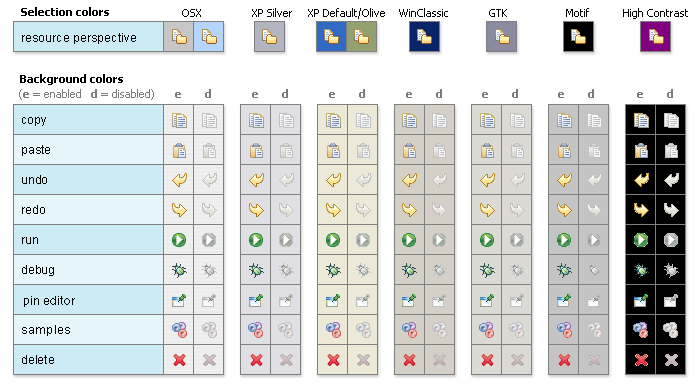
Antialiasing the edges is suitable if you know the background color. Since knowing the background color is not always possible, using medium to dark pixels on the edges will help ensure that the icon works well on most backgrounds. Using lighter edge pixels can result in poor quality, rough looking edges that do no blend well to the background. This is especially true of rounded shapes on dark backgrounds. The following example illustrates the effect of using lighter pixels on a round icon that sits on a medium to dark color background:

This example shows the same icon on the same background, but with darker edge pixels:
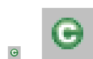
In some special cases, a single icon may appear on multiple backgrounds and will need to be designed specifically for each case.
-
Download the palette
You can download the palette in the .aco, .ai and .gpl file format.To load the palette in Adobe Photoshop, open the "Swatches" palette and choose Load Swatches…; then navigate to where you saved the eclipse-style_palette.aco palette.
To load the palette in Adobe Illustrator, first save the eclipse-style_palette.ai palette in the Adobe Illustrator > Presets > Swatches folder. If you have Adobe Illustrator already open, you will need to restart it after adding this file. Once you restart Illustrator, go to and choose the eclipse-style_palette.ai palette from the list.
To use the eclipse-style_palette.gpl palette in The GIMP open the "Palettes" dialog and choose "Import Palette" entry from the context menu.
The eclipse-style_palette.gpl palette can also be used in Inkscape. Just copy the palette file into the user’s profile into the
/~/.config/inkscape/palettesfolder.Save your images with the palette as a base.
In Adobe Photoshop, when an image is complete and ready to be saved to PNG, index the image to "exact" color. This indexing preserves all of the colors the graphic was created with, including any colors you have added that are not contained in the base palette.
In The GIMP, simply Save As PNG.
The GIMP User Manual is available online at: www.gimp.org/docs/
7.2.1.3. Wizard Banner Graphics
Style characteristics
Like the Eclipse-style icons, wizard banner graphics have a clean presentation that is achieved by using rich but not overpowering color, a one-point perspective to show the elements clearly, subtle color gradients and soft lighting techniques to give the images a subtle three-dimensional form. Wizard banner graphics have the attribute of being larger than the icons, which allows for application of a more intricate, illustrative rendering style with more complex lighting.
- Lighting
-
Lighting for the wizard banner graphics can be a simple unidirectional source or a complex multidimensional source, depending on the shape of the elements in the graphic. Unlike the icons, where the light source tends to come directly from above, the wizard graphics are lit mainly from the top left, have variable lighting that is tailored to each graphic, and have the added visual dimension of a cast shadow. The three-dimensional look is achieved by using color blends and gradients in Adobe Illustrator to render the highlights, mid-tones, shadows, and reflected light.

- Shadow
-
For rectilinear objects, such as folders and files, an additional ight source is implied from the left-front of the graphic, casting a shadow to the right of the graphic. This shadow is angled backward - to the right-back - at 45 degrees. When designing these types of graphics, consider the space the shadow will require by locating the graphical elements on the left side of the designated image area.
Spherical objects have a different shadow treatment than their rectangular counterparts. The shadow is positioned directly below the object and is elliptical in shape. The sphere touches the shadow, which has the effect of grounding the sphere to the surface below. Use this type of shadow for spherical and flat-bottomed round objects, such as the "Java Method" sphere and "Service" bell, which are centered in the designated image area.
Floating objects have a similar shadow to spherical objects in that the shadow is also elliptical in shape and positioned below the object. However, unlike the shadow for spherical objects, it does not touch the object. The object floats above the surface and casts a shadow directly below it. Use this type of shadow for elements that are centered and floating within the designated image area.
- Outlines
-
Each element within an individual wizard graphic has a keyline to define its outer edges. Solid color lines define the top and bottom edges of the element. Gradients define the sides, going from a dark color at the bottom to a light color at the top. This approach applies to most common objects. However, there are many wizard graphics that are defined with flat color instead of gradients. Whether a gradient or flat color is used, choose an outline color that works well with the color of the element it defines. This is usually mid-tone color related to the dominant color used within the element. The following examples use established outline treatments and colors. Standard outline colors exist for many elements. To read more about the standard colors, see Color below, and use the Common Elements design resource for reusable elements.
Here is an example of a gradient used to define the edges of a wizard graphic:

Here is an example of a flat outline used to define the edges of a wizard graphic:

Composition
Composition of elements within wizard graphics follows most of the same practices described for icons. There are a few wizard-specific compositional concerns to be aware of for actions, objects, and states:
| Actions |
in wizard banner graphics are generally shown in the same location as they are in the icon that launches them. A notable exception is the "create" sparkle, which is not shown at all in the wizard banner image. When in the toolbar wizard, the action is to create a specific kind of object. However, once in the wizard, the object is in the process of being created so the action is no longer necessary. |
| Objects, |
when overlapping, need to be clearly separated to ensure a legible image. The technique used in wizard banner graphics is to put a light glow around the front-most object. |
| States |
of objects, once in the wizard, change to what the state will be once the object is created. The most common example of this is the folder state: it is closed when in a toolbar wizard icon, but open when in a wizard banner graphic because it will be open once in a treeview or list view. |
Color
Wizard graphic colors are based on the icons that launch them. The colors used to create a toolbar wizard icon, for instance, should be the same colors used to create its wizard banner counterpart. To download and use the color palette for creating wizard graphics, see the Color Palette & Themes section above under Icons.
As with the icons, wizard banner graphics fall under a limited set of color categories. These color categories are established for most elements and should be reused for like elements to maintain consistency, meaning, and identity. The following examples show how the different categories of color are applied to wizard banner graphics.

Blue and yellow, as with the icons, are the two dominant colors and are used as a basis for many user interface graphics.

Green, as with the icons, is often used to indicate that something is being run or initiated, and as a common accent color. The actions "run" and "play" are primary examples of how green is applied to support the concept.

Red, as with the icons, is used to indicate an error or to signal an alert. It is also used for images that are typically red, such as a thermometer.
Brown, as with the icons, is used to a lesser extent than the other colors noted, but it is generally associated with very specific types of objects. These objects are the Java "package", "bundle", and the "Enterprise Java Bean (EJB)".

Purple, as with the icons, is associated with Java "Interface", plugin "fragment", and "Web Site" or "Site Project".

Beige, as with the icons, is associated with "template" and "generic" objects. While not limited to these two object types, beige is usually reserved for placeholder or unrealized objects.
- Background color
-
The background for wizard banners is part of the final graphic. It is a light blue curvilinear element that does not vary. However, the background color of the banner area does vary from one operation system and theme to another.
7.2.2. Consistency & Reuse
This section encourages consistency and reuse of existing graphical elements, and shows the core icon and wizard concepts currently in the tools.
In the development of the Eclipse style graphical elements, a visual language was formed to describe a variety of concepts in the user interface. These concepts are now represented by a large selection of tiny visual signs that many have come to know through using Eclipse-based tools.
In order to ensure a consistent visual experience, a common understanding of concepts across the tools, and to minimize confusion, we encourage you to re-use Eclipse-style graphical elements whenever possible.
7.2.2.1. Re-using graphical elements
A great many icons and wizard graphics have already been created in the Eclipse visual style, so there is a good chance that the elements you might need already exist. Samples of existing core concepts for icons and wizard graphics are shown below. Each of these elements carries with it a specific meaning, so care should be taken when using them to ensure consistent meaning is maintained. A more extensive collection of common visual elements can be found on the Common Elements page.
7.2.2.3. Core wizard graphic concepts

Download the core_wizard_concepts.ai and the core_wizard_concepts.psd files.
7.2.3. Common Elements
This section provides a library of graphical elements that have already been developed for Eclipse-based tools. This extensive selection of common elements provides not only a base for creating new icons and wizard graphics, but for reusing existing ones as they are. Used in conjunction with the core concepts shown in the Consistency & Reuse section, this library will enable efficient creation of graphical elements and promote consistency throughout the user interface.
7.2.3.1. Icon elements
Download the common_icon_elements_eclipse-proj.psd for Eclipse Project icons
and the common_icon_elements_eclipse-tools.psd file for a subset of icons related to Eclipse-based tools.
7.2.3.2. Wizard elements

Download the common_wizard_elements.ai vector-based file for designing wizard banner graphics
and the common_wizard_elements.psd raster-based file for cutting them.
7.2.4. States
This section describes the use of enabled and disabled icons in the user interface. It also provides instructions and an automated action set for creating the disabled state of your enabled color icons, a useful tool when producing a large volume of icons.
7.2.4.1. Icon States
This section describes the use of enabled and disabled icons in the user interface. It also provides instructions and an automated action set for creating the disabled state of your enabled color icons, a useful tool when producing a large volume of icons.
Enabled state
The enabled icon state is the color version of all toolbar, toolbar wizard, and local toolbar icons. This state indicates that a command is active and available for use. Information on creating the enabled color version of these icons can be found under Style & Design above.
Disabled state
The disabled icon state is a dimmed version of the enabled color toolbar, toolbar wizard, and local toolbar icons. This state indicates that a command is inactive and not available for use. The following image shows a set of disabled toolbar icons beside the enabled state. Note that the disabled versions are not strictly grayscale, they retain a hint of color from the original icon. This is achieved by adjusting the saturation and lightness as you will see in the automated action below:
| It is important to implement the graphical versions of the disabled state for toolbar and local toolbar icons. The quality and legibility of algorithmically rendered disabled icons is poor and they are not consistent with the majority of other tools that use the graphical versions. |
Creating the disabled icon state
To create this state, you will use the eclipse_disabledrender_R3V6.atn action in the Eclipse-style Actions palette.
Download the Eclipse-style Actions.
-
Load the
eclipse_disabledrender_R3V6.atninto the the Adobe Photoshop Actions palette. -
Use the marquee tool to select all the enabled versions of the toolbar and local toolbar icons you plan to create a disabled state for.
-
Next, hold the Ctrl key and hit ← or → once, then let go of the Ctrl key and hit the opposite arrow key to bump the images back into their exact initial position.
-
Start the "Create Disabled State" action by clicking on the "play" arrow at the bottom of the Actions palette. A copy of the color icons will be created and a series of changes will be made to the copies to make them look disabled. It happens quickly so if you want to deconstruct it, you will need to enable the dialog boxes to show while you run the action. These toggles on located on the left side of the Actions palette.
-
Once the disabled state is made, there is usually some minor adjustments required. We recommend you go through each icon and tweak any pixels that don’t look right and to give a consistent treatment to similar elements.
Toggled states
The toggled state is used on toolbars, local toolbars, and in menus. On toolbars and local toolbars, a toggle is represented by a button with two physical positions—up and down—which define a state, most commonly "on" and "off". Icons on a toggle button, like the tool tips that accompany them, should persist from one state to the next. The only thing that changes is the position of the button. For example:

Sometimes a toggle is not a simple on/off state. For example, there might be two different ways information can be displayed in a view. In this case, two buttons with two separate icons are required. The buttons sit beside one another on the local toolbar and when one is on, the other is off.
Opened and closed folder states
In the treeview, ideally, folders would be closed when the [-]/[]` widget beside the folder icon is in a closed state, as in `[],
and opened when the [-]/[+] widget beside the folder icon is in an opened state, as in [-].
Because Eclipse does not animate opened and closed folder states in the treeview,
project folders and regular folders are closed on the toolbar and local toolbar,
but open in wizard banners and in treeviews.
Here is the reasoning:
On the toolbar, a closed folder represents one that has not been created yet. In a wizard banner, an open folder represents one that will be created in the form of a model object in the treeview. In the treeview, an open folder represents one an existing and active folder.
One notable exception to open folders in the treeview is when used to represent a "group", as is the case with high-level project groupings in the Project Explorer View. These are shown with closed folders.
| All instructions for creating visual elements are based on using Adobe Photoshop 7.0 and above and Adobe Illustrator 9.0 and above. If you use earlier versions of these tools, the instructions may not work exactly as described. |
7.2.5. Templates
This section provides design files for producing different types of user interface graphics. A description of the templates and guidance on how to work with them is provided to help you get started quickly and working effectively.
Download all design templates.
This section provides design files for producing different types of user interface graphics. A description of the templates and guidance on how to work with them is also provided to help you get started quickly and working effectively.
Maintaining the simple structure of the templates will facilitate easy file sharing and efficient production of a large set of graphics for one tool.
7.2.5.1. Icon Design Template
-
Populating the template: Fill out the icon_design_template.psd file with the names of all known required icons separated by type, for example view, toolbar, and model object. Feel free to add or remove rows as you need them. Each plug-in should have its own separate Photoshop document (PSD). If you have access to old icon files, these can be placed into the orig. (original) column as a reference or starting point.
-
Designing the icons: Before beginning to design Eclipse-style icons or wizard banner graphics, first check if the concept or visual elements have been covered already. See the Consistency and Reuse and Common Elements sections.
Create initial passes of your ideas, and then place them in the template. Up to five different concepts for any given icon can be placed in the version cells provided, i.e., columns A, B, C, D, and E.
When you are satisfied with the results, mark the icons you think are the strongest candidates with boxes on the preferred (black) layer, and send to the requester for feedback in the form of a flattened PNG image.
-
Revising the original concept: It is likely that revisions to the first pass will be required. If there is room, revised icons can be placed in the version cells next to the first pass ones. If you run out of cells or need to erase any previous icon concepts, but do not want to lose them forever, save a new version of the design file and make space for new ideas by removing the icons that are not likely to be used.
Once the icons have been approved, move the chosen images to the cut column. To ensure they are positioned properly within the allotted screen space, turn on the cut layer (pink) in the PSD. For guidance on size and placement of different types of icons, see the Icon Size and Placement section.
-
Creating the disabled versions: See the States section for instructions on creating the disabled state for Toolbar and Local Toolbar icons.
-
Cutting the icons: See the Cutting Actions section for instructions on cutting the final images for delivery.
-
Marking revised icons: It is likely that even after the icons have been cut and delivered to the developer, further revisions will be required or entirely new icons may be requested. To keep track of which icons and their instances need to be cut or re-cut, a red box can be placed around each, using the cut or re-cut (red) layer.
7.2.5.2. Wizard Design Template
-
Populating the vector-based template: Fill out the vector-based template vector-wizard_design_template.ai with the names of all required wizard banner graphics. As with the Icon Template, you can add or remove rows to suit the number of graphics you will be creating. If you have access to the related toolbar wizard icon file, add it to the file as a primary starting point. If you have access to old wizard graphics, these can be placed into the orig. (original) column as a secondary starting point.
-
Designing the wizard banner graphics: Before beginning to design Eclipse-style wizard banner graphics, first check if the toolbar icon that launches the wizard has been created already. This will provide the basis of your design. Also, check if any of the visual elements that will be part of the wizard graphic have been created already in Adobe Illustrator. See the Consistency and Reuse and Common Elements sections for existing elements.
The concept for a wizard banner should be closely aligned with, if not identical to, the toolbar wizard icon that launches the wizard dialog. Create an initial pass of each image on the New Wizard graphics layer, following the wizard banner stylistic treatment detailed in the Style & Design section. As with the icons, more than one pass on the design may be required before coming to the final design.
When you are satisfied with the results, create a JPEG version of the template and send it to the requestor for feedback. Be sure to include the toolbar icon that corresponds to the wizard banner graphic as a reference.
-
Transferring vector-based images to the PSD template: Once the graphics are approved and ready to be cut, you will need to transfer them from the AI template to the PSD template. In the AI template, turn off all layers, except New Wizard graphics. Select from the menu. The settings you will need for this part of the transfer are shown here:

The PNG-24 file is temporary and is used to transfer high quality images from the AI file to the PSD file where you will use an action palette to cut the files.
-
Populating the PSD template: Fill out the eclipse_wizard_design_template.psd template with Layer Sets for each wizard banner graphic. Each Layer Set should have a single layer for the PNG-formatted wizard image. Add Layer Sets as you need them.
Open the temporary PNG file and transfer the wizard graphics, one per layer, to the corresponding Layer Set in the PSD file. Once all of your wizard graphics are transferred, Save the file. You are ready to cut.
-
Cutting the wizard banner graphics: See the Cutting Actions section for instructions on cutting wizard banner graphics.
7.3. Specifications
This section details technical information you will need to design and prepare your Eclipse-style graphics for implementation.
7.3.1. File Formats
This section lists and describes the graphic file formats used for the different graphic types.
7.3.1.1. GIF - Graphics Interchange Format
GIF images should not be used. The cannot handle transparency very well and because of this they can look bad on the selected theme of the Eclipse IDE. Prefer the usage of PNG files.
7.3.1.2. PNG - Portable Network Graphics
PNG is a bitmapped image format that employs lossless data compression. PNG was created to improve upon and replace the GIF format, as an image-file format not requiring a patent license. PNG is pronounced "ping" (/pɪŋ/ in IPA), but can be spoken "P-N-G" (as described at en.wikipedia.org/wiki/PNG). One of the great values of PNG format is its support for alphas or transparency, allowing bleed through of the background on which these graphics sit.
PNG is used for the following types of graphics in Eclipse-based tooling:
-
Product
-
View (includes Perspective and Fast View)
-
Toolbar (includes Toolbar Wizard)
-
Local Toolbar
-
Model Object
-
Object Overlay (includes Underlay)
-
Wizard Banner
-
Table
-
Palette
-
Diagram (exceptions noted below under SVG)
-
Progress Indicator
-
Miscellaneous (there might be exceptions)
7.3.1.3. SVG - Scalable Vector Graphics format
SVG is a language for describing both two-dimensional and animated vector-based graphics in XML. One of its distinguishing attributes is its scalability: One size of an image will scale nicely to unlimited sizes. While there is great potential in using SVG for user interface graphics, especially on palettes and in diagrams, it currently has limited use in the tooling.
SVG is used for the following types of graphics in Eclipse-based tooling:
-
Diagram (Action Bar only)
In designing graphics for SVG output, use a minimal number of elements in each image, especially for small 16×16 icons. This will help ensure image clarity, and fewer elements will keep the file size small.
7.3.1.4. BMP - Bit map format
BMP is the standard Microsoft Windows raster image format.
BMP is used for the following types of graphics in Eclipse-based tooling:
-
Pointer
-
Cursor
7.3.1.5. ICO - Icon format
ICO format is used on the Microsoft Windows operating system and is required for product install and launch icons, including desktop, treeview, and menu icons.
ICO is used for the following type of graphics in Eclipse-based tooling:
-
Product icons (Windows)
Implementation tip: Avoid using ICO files for other graphics in Eclipse. ICO files contain multiple different images with different sizes. Therefore any of the available sizes might be used at runtime. This can lead to menu items or other components suddenly showing very large images instead of the expected 16×16 or 32×32 pixel resolutions.
7.3.1.7. XPM - X PixMap format
XPM is an ASCII image format that supports transparent color. This image format is used on Linux and is required for product install and launch icons, including desktop, treeview, and menu icons.
XPM is used for the following type of graphics in Eclipse-based tooling:
-
Product icons (Linux)
7.3.2. Graphic Types
This section describes the different types of graphics that are used in Eclipse-based tools, and where they are located within the user interface.
The Eclipse style graphics have been categorized into separate types so that each can be optimized for its specific location. The majority of interface graphics are 16×16 pixels in size, though there are some graphic types that come in additional or unconventional sizes suited specifically to their use. Details on size and placement of the image see the next subsection on Icon Size & Placement. The following graphic types are described below:
7.3.2.1. Product
The Product icon, also known as the Application icon, represents the branding of the product and is always located on the far left of the window title bar before the perspective, document, and product name. These icons are also used to launch the product from the menu or from a desktop or treeview shortcut, and as product identifiers in the About screen. Since these icons are intended for use in specific places, they are not meant for use on toolbars or in the user interface in general.

| Format |
ICO (Windows), ICNS (Mac), XPM (Linux) |
7.3.2.2. Perspective
Perspective icons represent different working environments called "Perspectives". Each perspective is a set of views and content editors with a layout conducive to the tasks associated with that environment. The perspective icons allow the user to quickly switch between different opened perspectives. By default, these icons are located in the top right of the user interface to the right of the main toolbar, and have a horizontal orientation. They can also be docked on the top left just below the toolbar, keeping a horizontal orientation, or on the left of the navigator view with a vertical orientation.

| Type |
View |
| Folder name |
|
| Size |
16×16 pixels |
| Format |
PNG |
7.3.2.3. Perspective Onboarding Image
Starting with Eclipse 4.28 each perspective can provide so called "Onboarding Information". This is shown in the empty editor area when no editor is open and contains an image. This image is shown in a watermark-like style. So it’s gray scale and in low contrast. This image should be derived from the perspective icon - basically a blow-up gray scale version of the perspective icon.
| Type |
Onboarding Image |
| Folder name |
<top level> |
| Size |
250×250 pixels |
| Format |
PNG |
7.3.2.4. Fast View
Fast View icons allow users to quickly display different views that have been created as fast views. These icons are by default located in the bottom left of the user interface and have a horizontal orientation. They can also be docked with a vertical orientation on the left of the navigator view, or on the far right of the user interface.

| Type |
View |
| Folder name |
|
| Size |
16×16 pixels |
| Format |
PNG |
7.3.2.5. Toolbar
Toolbar icons are located on the main toolbar across the top of the workbench. They represent actions, and will invoke a command, either globally or within the editor.

| Type |
Toolbar |
| Folder names |
|
| Size |
16×16 pixels |
| Format |
PNG |
7.3.2.6. Toolbar Wizard
Toolbar wizard icons are found on the main toolbar across the top of the workbench as well as in the New wizard dialog list. Selecting one of these icons will launch a wizard. The most common type of toolbar wizard is for creating "new" objects or resources. These are easily recognized by their gold sparkle in the upper right corner of the icon. The other common type of toolbar wizard is for generating files. These icons are distinguished by two stacked files in front of a diskette.
| Type |
Toolbar |
| Folder names |
|
| Size |
16×16 pixels |
| Format |
PNG |
7.3.2.7. View
View icons are found on the left side of the titlebar of each view within the workbench. These icons indicate each view’s function or the type of object a view contains.

| Type |
View |
| Folder name |
|
| Size |
16×16 pixels |
| Format |
PNG |
7.3.2.8. Local Toolbar
Local toolbar icons are found to the right of the view icon on the titlebar of each view within the workbench. They represent actions, and invoke commands on objects in only that view. Local toolbar type icons are also used in all menus, including main, pull down, and context menus.

| Type |
Local Toolbar |
| Folder names |
|
| Size |
16×16 pixels |
| Format |
PNG |
7.3.2.9. Model Object
Model Object icons are found in tree views, list views, and on editor tabs within the workbench. They represent objects and sometimes states, but not actions. Examples of model object icons are project folders and file types. Note that objects selected in the navigator view, such as the Package Explorer in the Java Perspective, have a one-to-one relationship with the file open in the Editor View, i.e., the same icon is used in both the navigator view and the Editor tab. In contrast, in the Outline View, the model object selected is not shown in the Editor, but the selection itself is shown in both the Outline View and the source code within the Editor.
One-to-one relationship between model object in treeview and icon in Editor tab

Model object in Outline View is not shown in the Editor, but the selection is shown in both views
| Type |
Model Object |
| Folder name |
|
| Size |
16×16 pixels |
| Format |
PNG |
7.3.2.10. Object Overlay (and Underlay)
Object overlay icons are decorator elements that are used in tree or list views. They are appended to model object icons as signifiers of an object type, status, attribute, transition state, multiplicity or some sort of change. Underlays are a special type of underlay that go under the model object. Like the overlay, they signify some kind of change about the model object they append to.

There are six main types of overlays:
-
Project Nature or Type
These overlays are displayed in the Navigator and the Package views. They are completely superimposed on the model object at the top right corner of the 16×16 icon space.Only a few project nature overlay icons have been created to prevent crowding in the interface. Project nature overlays quickly identify the various types of projects that can be contained in the Navigator and mirroring views.
The white keyline border is applied around the image to enhance legibility.
Example:
Type Object Overlay
Folder name ovr16Size 7×8 pixels
Format PNG
-
Auxiliary or Status
These overlays are displayed in all tree views. This type of overlay is completely superimposed on the model object at the bottom left corner of the 16×16 icon space.The auxiliary overlay quickly identifies the status of an object. Examples of auxiliary overlays are warning, error, failure, and success.
Example:

Type Object Overlay
Folder name ovr16Size 7×8 pixels
Format PNG
-
Java or Attribute
These overlays are displayed in the Outline, Hierarchy, and Package views. The Java overlays are appended to the model object icon, so they extend the 16×16 icon space. They are placed to the right of a model object icon, overlapping the 16×16 model object space by 3 pixels. A maximum of 3 java overlays can be put on the model object.The order in which an overlay appears depends on the order in which it has been assigned. In designing Java overlays, it is important to make sure the base object icon can support the addition of overlays without compromising readability. Note that there are two Java overlays that always display at the bottom right corner of the model object: Synchronize overlay synchronized (method) and Run overlay run (class).
Java overlays identify attributes of an object. Examples include static, final, abstract, and synchronized.
In the Hierarchy and Outline views, the Java overlays are appended to the right of the model object as shown in the first example below, but in the Package view they are stacked over the model object, as shown in the second example. Examples:
-
Hierarchy and Outline Views:

-
Package View:

Type Object Overlay
Folder name ovr16Size 7×8 pixels
Format PNG
-
-
Version Control or Transition-state
These overlays are displayed in the Navigator view and in the Structure View of the Merge Editor in EGit. When they are displayed in the Navigator view, the overlay is completely superimposed on the model object at the right of the 16×16 icon space.When the version control overlays are displayed in the Structure View of the Merge Editor in EGit, they are appended to the model object, so they extend the 16×16 space. They are placed to the right of a model object icon, overlapping the 16×16 model object space by 3 pixels. In EGit there is a maximum of 2 overlays on the right of the object.
Version control overlays identify a transition state of an object. Examples of these overlays are incoming, outgoing, in conflict, added, deleted, and changed.
Examples:
-
Navigator View:

-
Structure View:
Type Object Overlay
Folder name ovr16Size Typically 7×8 pixels, though some are larger
Format PNG
-
-
Multiplicity
These overlays are displayed in the treeview of a generator model file in the Eclipse Modeling Framework (EMF). These represent relationships, such as one to one or one to many within the model. This type of overlay spans the width of the model object icon and is located at its base so that it does obscure too much of the underlying object.Example:

Type Object Overlay
Folder name ovr16Size 16×6 pixels image size but a final cut size of 16×16 pixels
Format PNG
-
Underlays
These are displayed under model objects in the treeview of some tools. They signify some kind of change about the object, such as version control or generated code. Underlays are typically square in shape, with a 2 pixel radius on each corner, and are light in color so they are clean and not overstated when seen multiple times in a treeview.Type Object Overlay
Folder name ovr16Size 16×16 pixels
Format PNG
7.3.2.11. Table
Table icons are a type of model object icon used specifically in tables as labels, status indication, or to give additional information about the items they accompany in a table row. Although these icons are a type of model object, they are created smaller than regular model objects in order to fit in the table row without distortion or crowding the space.
Table icons shown in context
| Type |
Table |
| Folder name |
|
| Size |
They are designed in the 16×16 pixel space, but the actual image size is no greater than 15×14 pixels. |
| Format |
PNG |
7.3.2.12. Palette
Palette icons are located on the palette and most commonly accompany diagrams or some editable canvas space. In this context, palette icons are either objects that may be added to the canvas, or tools that may be used to manipulate objects or draw lines or shapes on the canvas.
Palettes are also used to host reusable elements, such as the Snippets view, which contains code snippets for reuse. In this context, double clicking on a snippet will either add the snippet directly to the source code or invoke an intervening dialog box, which provides the user choices about the snippet before it is inserted into their source code within the editor. Some code snippets can also be dragged and dropped directly into the source code.
Palette icons shown in context
+

| Type |
Palette |
| Folder name |
|
| Size |
Size varies depending on the context of the palette. The default size is 16×16 pixels but can be changed by the user to "Use large icons", which are 24×24 pixels in size. There are also rare cases where 32×32 pixel icons are used on the palette. |
| Format |
PNG |
7.3.2.13. Diagram
Diagram icons come in two subtypes: Canvas and Action Bar. Canvas icons are used in the diagram or canvas area. These icons commonly represent object types, but can also be used to mark content type or to show formatting in the preview mode of an editor. The size of a canvas icon depends on its purpose and context. Action Bar icons sit on a kind of "mini palette" within the diagram. This mini palette is contact sensitive and will be shown only when the cursor hovers over or selects a certain type of object in the diagram. For example, 'fields' and 'types' in a UML Diagram.
Diagram icons shown in context
+ 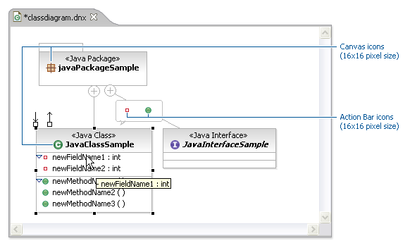
| Type |
Diagram |
| Folder name |
|
| Size |
Canvas icons may be 16×16, 24×24, or 32×32 pixel in size. There are also instances of 15×15, 12×12, and 10×10 pixel icons in some Web Tooling diagrams. 15×15 and 10×10 icons are used in site navigation diagrams, and 12×12 icons are used in the editor preview mode to show content types and formatting. |
| Format |
PNG is used for all diagram graphics, except Action Bar icons, which are SVG. |
7.3.2.14. Progress Indicator
The progress indicator icon is located in lower right of user interface to the right of the actual progress indicator, which shows the linear progress of a process. As shown in the following image, the icon is also a button that will open the Progress View.
Progress indicator icon shown in context
+ 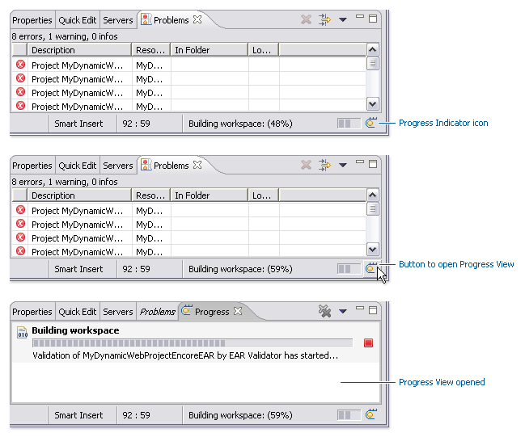
| Type |
Progress Indicator |
| Folder name |
|
| Size |
16×16 pixels |
| Format |
PNG |
7.3.2.15. Pointer and Cursor Mask
Pointer icons are cursors and each requires a cursor mask. The cursor mask is an inverted image, or a complete mask, of the pointer.
| Types |
Pointer and Cursor Mask |
| Folder name |
|
| Size |
32×32 pixels |
| Format |
BMP |

7.3.3. Icon Size & Placement
This section shows the final cut size of each of the different types of icons, as well as what the placement and drawing area is within the allotted space.
The majority of Eclipse style icons are designed within an area of 16×16 pixels. That is the final cut size of the image. Within that area, a 15×15 pixel space is reserved for the image itself, leaving both a vertical and horizontal line of empty pixels to allow for proper alignment of the image within the user interface. In the size and placement images below, the light blue represents the image area and the bright pink represents the empty pixel area.
If the height and width of the image are an even number of pixels smaller than 16×16 pixels, it is a rule of thumb to center the image within the 16×16 space. For example, a 14×14 pixel image will have a single row of empty pixels on all four sides.
Exceptions to the common 16×16 image size are also detailed below. All sizes are indicated with width before height.
7.3.3.1. Product
Product icons occupy the full space allotted for all five sizes: 16×16, 24×24, 32×32, 64×64, and 72×72 pixels. This shows how the 16×16 product icon fills the entire space:
| Image size in allotted space | Sample image in place |
|---|---|
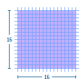 |
|

7.3.3.2. Perspective and Fast View
The maximum image size is 16×16 pixels, but 15×15 is recommended. If the image is 15×15 or smaller, the empty pixels must be on the right and bottom, as shown here.
Image size in allotted space
| Image size in allotted space | Sample image in place |
|---|---|
|
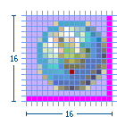 |

7.3.3.3. View
The maximum image size is 16×16 pixels, but 15×15 is recommended. If the image is 15×15 or smaller, the empty pixels must be on the left and bottom, as shown here.
| Image size in allotted space | Sample image in place |
|---|---|
|
|


7.3.3.4. Toolbar, Toolbar Wizard, and Local Toolbar
The maximum image size is 16×16 pixels, but 15×15 is recommended. If the image is 15×15 or smaller, the empty pixels must be on the left and top, as shown here.
| Image size in allotted space | Sample image in place |
|---|---|
|
|


7.3.3.5. Model Object
The maximum image size is 16×15 pixels, but 15×15 is recommended. Model Object icons must be no greater than 15 pixels high. The empty pixels must be on the left and bottom, as shown here.
| Image size in allotted space | Sample image in place |
|---|---|
|
|


7.3.3.6. Object Overlay (and Underlay)
Most object overlay icons are a maximum image size of 7×8 pixels, always centered. There are some exceptions to this size, two of which are covered here: the "multiplicity" overlay and the "underlay". The multiplicity overlay spans the width of the model object to a maximum of 16 pixels wide and 6 pixels high. The underlay is a maximum size of 15×16 pixels, though commonly they are a square 15×15 pixels in size so they are uniform when seen multiple times in the treeview.
Overlay icons should have an outer white keyline surrounding the image to clearly separate them from the model object icons that they overlay. If there is not enough space to add the white keyline all the way around the overlay image, then add the white pixels on only the side that will be overlapping the model object. This can be determined by finding out what type of overlay it is. See the Graphic Types subsection for a sample and description of the different types of overlays. For information on how each of the overlays is positioned on the model object, see the subsection on Positioning in the UI.
Standard object overlay with a maximum image size of 7×8 pixels:
| Image size in allotted space |
|---|
|

Example of a standard Project Nature—Type—object overlay in place:
| Image size in allotted space | Sample image in place |
|---|---|
|
|


Example of a standard Auxiliary—Status—object overlay in place:
| Image size in allotted space | Sample image in place |
|---|---|
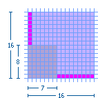 |
|

Example of a standard Java—Attribute—object overlay in place:
| Image size in allotted space | Sample image in place |
|---|---|
|
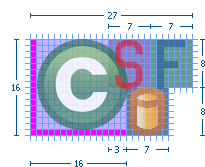 |

Example of a standard Version Control—Transition-state—object overlay in place:
| Image size in allotted space | Sample image in place |
|---|---|
|
|


Example of two stacking Version Control object overlays in place:
| Image size in allotted space | Sample image in place |
|---|---|
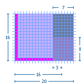 |
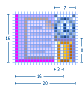 |
Multiplicity object overlay with a maximum image size of 16×6 pixels:
| Image size in allotted space | Sample image in place |
|---|---|
|
|


Underlay with a maximum image size of 16×15 pixels, but 15×15 is recommended. The empty pixels must be on the left and bottom, as shown here:
| Image size in allotted space | Sample image in place |
|---|---|
|
|


7.3.3.7. Table
The maximum image size is 15×14 pixels. Table icons must be no greater than 14 pixels high. The empty pixels must be on the top, bottom, and left, as shown here.
| Image size in allotted space | Sample image in place |
|---|---|
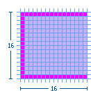 |
|

7.3.3.8. Palette
Standard small (16×16) palette icon: The maximum image size is 16×15 pixels, but 15×15 is recommended. Palette icons must be no greater than 15 pixels high. The empty pixels must be on the left and bottom, as shown here.
| Image size in allotted space | Sample image in place |
|---|---|
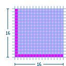 |
|

Standard large (24×24) palette icon: The maximum image size is 24×23 pixels, but 23×23 is recommended. Palette icons must be no greater than 23 pixels high. The empty pixels must be on the left and bottom, as shown here.
| Image size in allotted space | Sample image in place |
|---|---|
|
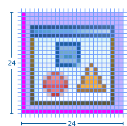 |

Large (32×32) palette icon: The maximum image size is 30×30 pixels with the image centered. The empty pixels are on all four sides of the image.
| Image size in allotted space | Sample image in place |
|---|---|
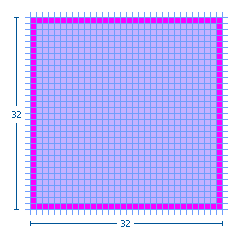 |
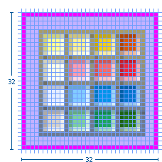 |
7.3.3.9. Diagram
Small (10×10) canvas icon: The maximum image size is 10×10 pixels. The image fills the space as required.
| Image size in allotted space | Sample image in place |
|---|---|
|
|


Small (12×12) canvas icon: The maximum image size is 12×12 pixels. The image fills the space as required.
| Image size in allotted space | Sample image in place |
|---|---|
|
|


Small (16×16) canvas icon: The maximum image size is 16×15 pixels, but 15×15 is recommended. The empty pixels must be on the left and bottom, as shown here.
| Image size in allotted space | Sample image in place |
|---|---|
|
|


Large (24×24) canvas icon: The maximum image size is 24×23 pixels, but 23×23 is recommended. The empty pixels must be on the left and bottom, as shown here.
| Image size in allotted space | Sample image in place |
|---|---|
|
|


Large (32×32) canvas icon: The maximum image size is 32×32 pixels, but 30×30 is recommended with the image centered. The empty pixels are on all four sides of the image.
| Image size in allotted space | Sample image in place |
|---|---|
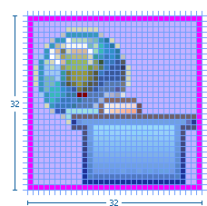 |
7.3.3.10. Progress Indicator
The maximum image size is 16×15 pixels, but 15×15 is recommended. Progress indicator icons must be no greater than 15 pixels high. The empty pixels must be on the left and bottom, as shown here.
| Image size in allotted space | Sample image in place |
|---|---|
|

7.3.3.11. Pointer and Cursor Mask
The final size of the pointer and cursor masks is 32×32 pixels. The actual image size of the pointer is usually fewer than 20×20 pixels, often 16×16 pixels, but can also fill the entire 32×32 space. There are no empty pixels in the pointer and cursor mask images. Both are filled completely with black and white, with the mask being the opposite of the pointer or masking it out entirely.
Pointer and cursor mask image sizes shown in the 32×32 pixel space:
| Image size in allotted space | Sample image in place |
|---|---|
|
|


7.3.3.12. Wizard Banner
All wizard banner graphics are designed to fit within a specified screen space of 75×66 pixels on the right side of the wizard banner.
The actual size of each graphic will vary depending on the elements involved, but will generally be around 67×50 pixels in size.
Within the banner space allocation, there is no firm rule for where to place the wizard graphic. Generally, the graphic is centered vertically, and off-center to the left horizontally.

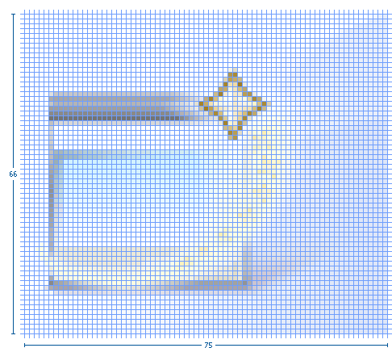
7.4. Implementation
This section provides automated cutting actions, and conventions for file and folder naming and structure.
7.4.1. Cutting Actions
This section describes the macros for cutting icons, icon overlays, and wizard banner graphics to get them ready for implementation.
In the process described here for creating icons, we use the term 'cut' to mean the action of generating the individual .png files for each icon.
This term refers to the fact that the icons are created in a single original .psd file
that contains all the icons for a given product (the icon_template.psd file),
and then the individual icons are 'cut' out of the file into individual files.
To increase the speed and efficiency of cutting hundreds of icons at a time, a series of cutting actions has been created that, when run in Adobe Photoshop, will automatically guide you through the cutting process for each icon in a matter of seconds. All you need to do is start the action and when prompted, name and save each icon into its proper folder.
To use these actions, download the eclipse_cutting_R3V6.atn file, and then load it into the Actions Palette.
7.4.1.1. Cutting 16×16 Pixel Icons
-
Make sure that the pink cut layer is turned on, in the
.psdfile. -
Play the Dupe and Flatten_main file action to create a new, flat file. (See A in the Detailed View of Cutting Actions below)
-
Using the Marquee tool at a fixed size of 16×16 pixels, select the first icon to be cut.
-
Play the eclipse icon cuts\_16s action. The action will then automatically move through the cutting process. (See B-F below)
-
When prompted, provide a name for the icon in lower case and click Save to save it as a
.pngin the folder you specify. (See G) -
When you click OK to finish saving the image as either a Normal or Interlaced
.pngfile, the action then automatically moves the marquee selection down to the next icon and begins the process all over again. (See H)To ensure the last step works properly, make sure the pink cut square for each icon is spaced exactly as specified in the
icon_design_template.psd.
7.4.1.2. Cutting 7×8 Pixel Object Overlay Icons
Follow the steps as laid out above, except cut the icon at 7×8 pixels, using the Eclipse icon cuts_overlays action.
7.4.1.3. Cutting Wizard graphics
-
Ensure that the wizard psd has a path called wizard cut path under Paths tab.
-
Play the Dupe and Flatten_main file action to create a new, flat file.
-
Ensure that the layer called "soft curves" is visible.
-
Ensure that each wizard graphic is in a layer set.
-
Select the top layer set where you want to being cutting and ensure all other layer sets are not visible.
-
Play the Wizard Dupe and crop action to create a new file that is cropped to 75×66 pixels. (See A-C below)
-
Play the Wizard cut action. The action will then automatically move through the cutting process from top to bottom in the layers palette. (See D below)
-
When prompted, provide a name for the icon in lower case and click Save to save it as a
.pngin the folder you specify. (See E) -
When you click OK to finish saving the image as either a Normal or Interlaced
.pngfile, the action then automatically delete the current layer set, and moves to the next one and begins the process all over again. (See F)To ensure the last step works properly, make sure each wizard graphic is contained in a layer set folder.
7.4.2. Naming Conventions
This section describes the Eclipse standard for file naming and guidelines for using suffixes that will help others quickly identify the graphic type or function.
We recommend that you work with your development contact to establish file names for each graphic before you begin design work, using the following guidelines:
7.4.2.1. Abbreviations
The file name should be an abbreviation of the full icon name, for example, the name for the Create DTD Wizard icon might be abbreviated to "CrtDTD".
7.4.2.3. Character length
File names should be 10 characters or fewer whenever possible. Underscores count as a character.
7.4.2.4. Suffixes
The file name should end with a suffix that describes its location or function in the user interface,
for example, crtdtd_wiz.png.
See the table below for suffix suggestions.
7.4.2.5. Multiple sizes
Icons that have multiple sizes within one folder, such as multiple palette icon sizes, are differentiated by adding the icon size to the suffix. For example, file_pal, file_pal24, file_pal32, where *_pal represents the default 16×16 pixel size and the *_pal24 and *_pal32 represent larger sizes of the same icon.
7.4.2.6. Suggestions for File Naming Suffixes

|
Guideline 2.12 Abbreviate file name instead of using the full icon name, e.g., New Interface becomes "newint". |
|
Guideline 2.14 Use 10 characters or fewer in your file names if possible (underscores count as a character). |
7.4.3. Folder Structure
This section provides the Eclipse standard for folder names and structure for storing and implementing graphics within your plugin.
Once your graphics are ready for implementation they should be cut and saved into the folder naming and structure system described below. This system is based on the Eclipse plug-in folder naming and structure. When you compress your files for delivery using this system, they can be easily uncompressed directly into the intended plugin.
-
The name of the first level folder depends on where the plugin resides:
-
Eclipse Project components use the org.eclipse.componentname.ui convention for plugin names.
-
Eclipse Tools components use the org.eclipse.subprojectname.componentname.ui convention for plugin names.
-
IBM components use the com.ibm.etools.componentname.ui convention for plugin names.
Substitute the name of the plugin, for example "debugger", for "componentname", and the name of the subproject, such as "wst" for "subprojectname".
To read more about plugin names in Eclipse, see the Eclipse Platform Naming Conventions help page.
-
-
Each plugin that contains user interface graphics requires an
iconsfolder. -
Within the
iconsfolder, there are separate folders with names that indicate the state, type, and in some cases size, of the icons within, as described below:-
The first letter of Toolbar and Local toolbar folder names indicates the icon state. Use the letter
dfor disabled, orefor enabled. -
The next 3 to 8 letters signify the icon type:
-
diagram (
dgm), -
local toolbar (
lcl), -
toolbar (
tool), -
model object (
obj), -
object overlay (
ovr), -
palette (
pal), -
pointer (
point), -
product (
prod), -
progress indicator (
progress), -
view and perspective (
view), -
and wizard banner (
wizban).
-
-
The last two digits of the folder name are intended to indicate the size of the icons within. However, only a small number of folders show size in the name. These names will persist, but all folder types may now contain multiple sizes of images, such as 16×16 and 24×24 pixel versions of palette icons. The Naming Conventions subsection addresses file naming for multiple sizes within one folder.
The following image shows a complete folder structure for a plug-in:
 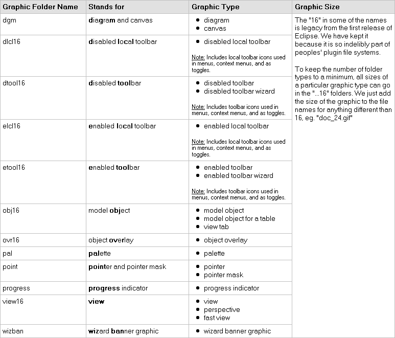
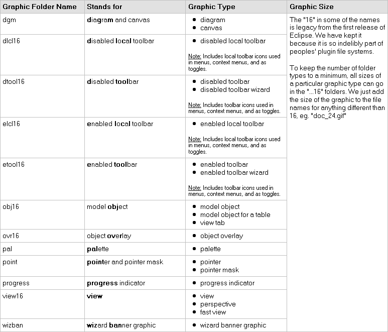 -
7.4.3.1. Notes:
-
For some legacy plug-ins, inside the
iconsfolder, there is a folder calledfull, which then contains these icon type folders. Find out from your development contact if this extra folder is required. -
We recommend that you do not use the
dndfolder name as it used by development for drag and drop elements. These are cursor mask icons for moving views within the application.
8. Component Development
8.1. Commands
A command, which is invoked by a user to carry out some specific functions, may appear as an item in a menu, or an item in a toolbar. In reflection of this, it has attributes for the menu or tool item label, tooltip, and image.
As a plug-in developer, you can contribute commands to the window menu bar and toolbar, or to individual views and editors. Contribution to the window is performed using an action set, a set of task oriented commands which the user can show or hide. Contribution to a view or editor is performed using individual command.
Here is an illustration of the main areas of contribution.
In this section we’ll look at general command guidelines. For information on window, view, or editor specific guidelines, see Windows, Views, and Editors.
8.1.1. Appearance
Each command must have a label, tool tip, and image. If the command appears in a toolbar, the command image will be displayed on all platforms. If the command appears in a menu, the image will be displayed on only some platforms, such as Windows® 2000. The label and tool tip should use Headline style capitalization, as defined in General UI Guidelines.
Each command must provide one full color image. This image will be displayed if the mouse is placed over the command. It will also be used to generate the enabled, disabled, and pressed images which appear in normal command use. Commands which are contributed in code also have the option to define explicit images for enabled, disabled, and roll over. This option can be used for greater control over image appearance.
The following snapshot shows the valid use of Headline capitalization in a toolbar.
|
Guideline 3.1 Each command must have a label, tool tip, and full color image. The label and tool tip must use Headline style capitalization. |
The tool tips for a command should describe the behavior which occurs if the command is invoked, independent of the current state. For push buttons, the label should describe the result of users pushing the button. For toggle buttons, it should describe its effect when the item is toggled on, and the label should not change depending on the state of the button. In Eclipse, it is recommended that the tool tip for a command uses the same text as that for the command label. For instance, in the following snapshot the behavior of the Show Type Hierarchy button is shown using a tool tip text.
|
Guideline 3.2 The command tooltip should describe the result of the command, not the current state of the command. Use the text same as that for the command label. |
For consistency, any command which has a similar behavior to existing commands in the workbench, should adopt the same terminology.
When creating a resource, the term "New" should be used in a command or wizard. For instance, "New File", "New Project" and "New Java Class". The term "Delete" should be used when deleting an existing resource.
When creating an object inside a resource (e.g., a tag in an XML file; a method or field in a Java class), the term "Add" should be used; the user is adding something to an existing resource.
8.1.2. Enablement
A command should be enabled only if it can be completed successfully. If this is not the case, the command should be disabled.
Command enablement should be quick to calculate. If it is too expensive to calculate the enablement of a command, the command should be optimistically enabled. If the command is invoked, it should calculate the real enablement, and show a dialog to the user if it is not available.
8.2. Dialogs
A dialog is used for modal interaction with the user. It can be used to solicit information, or provide feedback.
8.2.1. Initialization
When a dialog first opens, the initial focus should be given to the first control where information is required from the user. This control can be determined by the tab order of controls until a control is found where information is required. If the dialog provides simple feedback, or requires simple confirmation from the user, the initial focus may also be assigned to the default button.
8.2.2. Multiple Item Selection
Slush Bucket widgets (also known as the Twin Box design) should flow from the left to the right with the source objects on the left and selected files on the right.
Slush Buckets should also have the following control buttons, in this order, for moving objects from the source the selected buckets.
| Button | Function |
|---|---|
Add → |
Add whatever is selected on the left to the right |
← Remove |
Remove selected items from the right |
Add All → |
Add all (whether they are selected or not) |
← Remove All |
Remove all |

8.3. Wizards
In Eclipse, a wizard is commonly used for the creation of new resources, resource import, or resource export. It can also be used for the execution of any task involving a sequential series of steps. A wizard should be used if there are many steps in the task, and they must be completed in a specific order.
|
Guideline 5.1 Use a wizard for any task consisting of many steps, which must be completed in a specific order. |
8.3.1. Appearance
At the top of each wizard is a header, containing a banner graphic and a text area. The banner graphic contains an image representing the wizard task, and should be created with a white to blue, gray scale palette for consistency with other banners in Eclipse. These colors also avoid distracting the user from the important fields of the wizard. The text area is used to prompt the user for information which is absent, and display error messages if information is invalid. The presence of the header, with banner graphic and text area, creates a more polished feel, and greater perception of quality to the wizard.
At the bottom of each wizard, a Back, Next, Finish, and Cancel button should appear.

8.3.2. Initialization
When a wizard first opens, the focus should be placed in the first field requiring information (see Guideline 3.1). The header should be used to prompt the user for the first piece of required information.

It is not appropriate to display an error message. At this point, the user hasn’t done anything yet.

The initial state of the wizard should be derived from the context where it is opened. For instance, in the New File wizard, the current workbench selection is examined. If it points to a valid project or folder, the wizard will pre-populate the parent field with the parent project or folder name, and put cursor focus in the next field requiring user input. If the user’s selection does not point to a valid parent project or folder, the wizard will not pre-populate the folder name. Instead, it will leave the field blank and put the cursor focus in the field. When the user’s selection is on a file, a wizard may also go through these calculations using the parent folder or project of the file.

8.3.3. Validation of Data
Information validation within a wizard should be done in tab order. If the first required field is empty, an informative prompt should be shown in the text area, directing the user to fill in the field. If the first required field is in error, an error message should be shown in the text area. If the first required field is valid, check the next field, and so on. The text area should not be used to display more than one prompt or error at a time.
If dialog information is absent or invalid, the Next or Finish buttons should be disabled until the situation is resolved. When resolution occurs, and all of the information has been provided, the Next or Finish buttons may be enabled.

Error messages should be displayed only when user input is invalid.

|
Guideline 5.5 Validate the wizard data in tab order. Display a prompt when information is absent, and an error when information is invalid. |
|
Guideline 5.6 Enable the Next and Finish buttons only if all required information in the dialog is present and valid. |
The error messages in a wizard should be intended for the end user, not the developer. With this in mind, message IDs should never be presented as part of the error text in the wizard’s header area.

8.3.4. Browse Buttons
An edit field and Browse… button combination should be used whenever an existing object is referenced within a wizard. The edit field is used for direct input of the existing object, and the Browse… button is used to browse and select the object from a list of all possible choices.
For instance, in the New Java Class wizard, a Browse… button is placed beside the "Super Class" edit field. If the browse button is pressed, a Browse Dialog will appear, and the user can select a super class. This pattern should be used whenever a link will be established between a new object and an old one. The Browse… button should be located to the right of the edit field.
In the Browse Dialog, invalid choices should not appear. When the dialog is closed, and focus returns to the parent control, refresh the enablement state of controls within the dialog. In particular, refresh the enablement of Next, Finish, and OK buttons.
An example of valid and invalid filtering is shown in the following snapshot.

8.3.5. Wizard Completion
The New Resource and Import Wizards commonly create new files, folders, and projects within the workbench. If a single file is created, the wizard should open the file in an editor in the active page. If more than one file is created, open the most important, or central file. This makes it easier to modify and save the file.
Have a readme.html file for every example project, and open that readme.html automatically upon project creation.
This will give users an immediate overview of the example: what it does, prerequisites, limitations, steps to take, and so on.
If a new project is created, the wizard should change the active perspective within the workbench to one which is appropriate for the new project type. In Eclipse v2.1, users are prompted to confirm the switch to the preferred perspective when creating a new project. To avoid loss of context, plug-ins should use this, and not automatically switch without prompting. If users want to switch automatically in the future, they can choose "Do not show this message again" in the confirmation dialog.
|
Guideline 5.10 If a new project is created, prompt users and change the active perspective to suit the project type. |
In either case, where a file, folder, or project is created, the wizard should select and reveal the new object in the appropriate view. This provides concrete evidence to the user that, yes, the new object was created and now exists.
|
Guideline 5.11 If a new object is created, select and reveal the new object in the appropriate view. |
In many situations, the creation of a resource may involve the creation of a project or folder to contain the resource. If the containing project or folder can be created from within the wizard (with a very reasonable set of defaults), the wizard should allow it. If the creation of such resources requires detailed user interaction in order for parent project or folder to be set up correctly, the wizard should not attempt to do this. Instead, the wizard error text should instruct the user that "The specified project does not exist".
The EAR Import wizard in IBM’s WebSphere Studio is an example where allowing the user to specify the name of the parent project in place makes for a much more usable interaction. In this case, based on the user provided name, the wizard goes off and creates not only the EAR project itself, but also any web projects, etc., that may be needed as well.

8.3.6. Terminology
Within a creation wizard, if the item being created must be a Project (not a folder below a project), the term "Project" should be used. If it can be a folder below the project, the term "Folder" should be used. In addition, use the "name" suffix (uncapitalized) and no other prefix for the input field label. For example, use "Project name" or "Folder name" but not "Project Name" or "Server Project name".
8.4. Editors
An editor is a visual component within a workbench page. It is used to interact with the primary content, which may be a document or data object. In every case, this content is the primary focus of attention and a reflection of the primary task.
Modifications made in an editor follow an open-save-close lifecycle model. When an editor first opens, the editor contents should be unmodified (clean). If the contents are modified, the editor should communicate this change to the platform. In response, an asterisk will appear in the editor tab. The modifications should be buffered within the edit model, until such a time as the user explicitly saves them. At that point, the modifications should be committed to the model storage.
An editor is document or input-centric. Each editor has an input, and only one editor can exist for each editor input within a page. This policy has been designed to simplify part management.
|
Guideline 6.3 Only one instance of an editor may exist, for each editor input, within a perspective. |
In addition, it should be possible to open a separate instance of an editor for each different input.
|
Guideline 6.4 It must be possible to open a separate instance of an editor for each different input. |
8.4.1. Appearance
The editor should be labeled with the name of the resource being edited; not with the name of the editor.

|
Guideline 6.5 The editor should be labeled with the name of the file, document, or input being edited. |
If the editor contains more than one page, a tab control should be used for page activation. The use of this control is demonstrated by the plugin file and html editors.
Tab labels should be kept to one word, and two words at most.
8.4.2. Menus
An editor may contribute items directly to the window menu bar. All of the commands available in the editor should be displayed in the window menu bar, for accessibility and clarity. Exceptions are for the obvious commands, e.g., basic navigations such as next / previous character, line, word.
|
Guideline 6.7 All of the commands, except for the obvious commands, available in the editor should be added to the window menu bar. |
The following format is recommended, to ensure consistency across Eclipse and better ease of use.
| Edit | (one or more editor specific menus) | Window |
|---|---|---|
Add any object centric commands here |
(commands belong to the specific menus) |
Actions to control what you see in the editor. |
The window menu bar contains a number of global commands, such as Cut, Copy, and Paste in the Edit menu. These commands target the active part, as indicated by a shaded title area. If these commands are supported within an editor, the editor should hook these window commands, so that selection in the window menu bar or toolbar produces the same result as selection of the same command in the editor. The editor should not ignore these commands, and contribute duplicate commands to the window menu bar or toolbar.
A complete list of the global commands is declared in the IWorkbenchActionConstants.java (see below).
/**
* From IWorkbenchActionConstants.
* Standard global commands in a workbench window.
*/
public static final String [] GLOBAL_ACTIONS = {
UNDO,
REDO,
CUT,
COPY,
PASTE,
PRINT,
DELETE,
FIND,
SELECT_ALL,
BOOKMARK
};8.4.3. Toolbars
An editor may contribute commands directly to the window toolbar. The toolbar is used to expose the most commonly used commands in an editor. Any command which appears in the toolbar must also appear in the menu, but there is no need to duplicate every command in the menu within the toolbar.
The use of a local toolbar within an editor is contrary to the design of the workbench. Within the workbench, the toolbar for an editor is shared with editors of the same type. This reduces the flash which occurs when you switch between editors, reduces the number of images and commands in the product, and creates a better feel of integration.
8.4.4. Context Menus
A context menu should be used for context sensitive interaction with the objects in an editor. If an object is selected in an editor, and the context menu is opened, the context menu should contain only commands which are appropriate for the selection. Commands which affect the presentation of the view should not appear in the context menu.
In a text editor, you may assume that there is only one type of selection: text. In this case, the contents of the context menu will remain consistent for any selection in the editor.
For consistency with other editors in Eclipse, each editor should adopt a common order for commands within the context menu. This format is shown in the following table. Within this table, each item represents a category of commands. The categories within the context menu should be kept distinct from one another through the use of separators.
Undo / Redo, Save |
Add |
Show In |
Cut Copy Paste |
Delete |
Other Plugin Additions |
For good spatial navigation, fill the context menu with a fixed set of commands for each selection type. Once the contents have been defined, the enablement state of each command should be determined using the selected object state. In doing so, you establish a consistency which makes the menu more predictable, and easier to navigate.
|
Guideline 6.13 Fill the context menu with a fixed set of commands for each selection type, and then enable or disable each to reflect the selection state. |
One of the primary goals for the platform UI is extensibility. In fact, it is this extensibility which gives you the freedom to add new views, editors, perspectives, and actions to the platform. Of course, extensibility is a two way street. While you may wish to extend the platform, others may wish to extend your view or editor. It is common for one plug-in to add actions to the menu, toolbar, or context menu of an editor from another plugin.
In the platform, the menu and toolbar for an editor are automatically extended by the platform. In contrast, context menu extension is supported in collaboration between the editor and the platform. To achieve this collaboration, an editor must register each context menu it contains with the platform. It should also define a command filter for each object type in the editor. A command filter makes it easier for one plug-in to add a command to objects in an editor defined by another plug-in. The target is described using object type and attributes. For more information on the implementation of this concept, refer to Creating an Eclipse View.
8.4.5. Resource Deletion
When a resource is deleted from one of the navigators (e.g., Navigator view, J2EE view, Data view, or DBA Explorer view in IBM’s WebSphere Studio), the handling of any editor that is currently open on that resource depends on whether the editor has any unsaved changes. If the editor does not contain any changes since the resource was last saved then the editor should be immediately closed.
|
Guideline 6.16 If the input to an editor is deleted, and the editor contains no changes, the editor should be closed. |
If the editor contains changes to the resource since the resource was last saved (i.e., it is "dirty"), the editor should give the user a chance to save their changes to another location, and then close. Here is a sample of the dialog which should be displayed:
8.4.6. Unsaved Changes
If the editor contains changes to the resource since the resource was last saved (i.e., it is "dirty"), an asterisk should be used to prefix the resource name presented in the editor tab:

8.4.7. Read-Only Files
With a name like "editor", it’s not surprising that the issue of read-only files may cause confusion. If it’s read-only, how can you edit it? In this case, you should fall back to first principles.
| A view is typically used to navigate a hierarchy of information, open an editor, or display properties for the active editor. An editor is typically used to edit or browse a file, document or other input object. |
This statement is appropriate whether a file is read-only or not. In either case, the user should be able to select the file, open it, and browse the contents within an editor. If the file is read-only, the command should be disabled and the should be enabled. In the status bar area, Read-only should be shown instead of the default Writable message.
8.4.8. Integration with Other Views
In Eclipse, there is a special relationship between each editor and the Outline view. When an editor is opened, the Outline view will connect to the editor, and ask it for an outline model. If the editor answers an outline model, that model will be displayed in the Outline view whenever the editor is active. The outline is used to navigate through the content, or interact with the edit data at a higher level of abstraction.
For instance, if you open a .java file in an editor, the structure of the class is displayed in the Outline view. If you select a method or field in the outline, the text declaration of that item will be selected and revealed in the editor. If you select a method or field, and open the context menu, you can interact with the item as a conceptual unit, rather than just a bunch of text.
In general, an editor should provide an outline model to the Outline view if the data within the editor is too extensive to see on a single screen, and will yield a structured outline. This structured outline makes it very easy to navigate through objects like a java file or html file.
|
Guideline 6.20 If the data within an editor is too extensive to see on a single screen, and will yield a structured outline, the editor should provide an outline model to the Outline view. |
When an editor has an interaction with the Outline view, notification about location should be two-way. That is, the user should be able to select something in the outline and have the editor position updated, and the user should be able to select something in the editor pane and have the outline view updated.
A context menu should be available, as appropriate, in the outline view which should support creation operations as appropriate.
|
Guideline 6.21 Notification about location between an editor and the Outline view should be two-way. A context menu should be available in the Outline view as appropriate. |
If the edit model contains errors or warnings, they should be indicated in the Outline view. An error or warning image should be added to the item with the error or warning respectively. A container should have a red X if it there are errors on the container itself, a gray X if any of its descendents have errors (but not the container itself), and no X if neither the container nor any of its descendents have errors. For instance, in the following line, the addFastView method has an error, so an error image is added to the item and its parent.

For this to work, care must be taken to design icons with overlay in mind, so that glyphs can be applied to the ancestor’s icon.
In an editor, task objects are commonly used to mark a location within a document. Once a task has been created, it appears in the Task view. If the task is selected, you may reopen the editor at the location defined in the Task.
A bookmark object can also be used mark a location within a document. Once a bookmark has been created, it appears in the Bookmarks view. If the bookmark is selected, you may reopen the editor at the location defined in the Task.
8.4.9. Line Numbers
Editors with source lines of text should have line numbers, and optionally column numbers. Editors should also support menu allowing users to quickly jump to a desired line. The current line and column numbers should be shown in the status line (column number is optional). It’s optional for the editor to show line numbers for each line in the editor itself.
8.4.10. Table Cell Editors
If the editor contains tables with editable cells, a single-click over a cell should select the current item and put the cell into edit mode. In edit mode, any dropdowns, buttons, or other controls in the cell should be rendered upon the single-click.

|
Guideline 6.26 Table cell editors should support the single-click activation model, and in edit mode, they should render complex controls upon single-click. |
In addition, changes should be committed once a user clicks off the cell or hits Enter.
The following are examples of good behaviour for a table cell editor:
-
when put in edit mode, drop-down appears with current selection active & highlighted
-
when cursoring through drop-down using arrow keys, it is possible to move up and down any number of choices and the drop-down stays visible until user makes an explicit selection

-
first letter navigation is supported as a cursoring technique when the drop-down is visible
-
supports the Enter key as a way of making an explicit selection via the keyboard when the drop-down is visible
-
supports the Esc key as a way of canceling a selection via the keyboard when the drop-down is visible
-
when put in edit mode, the drop-down control (the down-arrow image) appears with current selection active & highlighted

-
when put in edit mode, it is possible to cycle through the choices via Cursor up and Cursor down to make a selection without needing to invoke the drop-down
8.4.11. Error Notification
If you are doing keystroke by keystroke validation in an editor, use red squiggles to underline the invalid content. When users move the mouse over the red squiggles, display the error text in a fly-over pop up box.
8.4.12. Interaction With External Editors
While a resource is opened within the workbench, if modifications are made to it outside of the workbench, we recommend the following approach to handle this situation. When the Save command is invoked in the editor, users should be prompted to either override the changes made outside of the workbench, or back out of the Save operation. If desired, this user prompt can be invoked sooner such as when the editor regains the focus.
8.5. Views
A view is a visual component within a workbench page. It is used in a support role for the primary task. You use them to navigate a hierarchy of information, open an editor, or view properties for the active editor.
|
Guideline 7.1 Use a view to navigate a hierarchy of information, open an editor, or display the properties of an object. |
Modifications made in a view should be saved immediately. For instance, if a file is modified in the Navigator, the changes are committed to the workspace immediately. A change made in the Outline view is committed to the edit model of the active editor immediately. For changes made in the Properties view, if the property is a property of an open edit model, it should be persisted to the edit model. If it is a property of a file, persist to file.
In the past, some views have tried to implement an editor style lifecycle, with a Save command. This can cause confusion. The File menu within a workbench window contains a Save command, but it applies to only the active editor. It should not target the active view. This leads to a situation where the command is in contradiction to the Save command within the view.
Within a perspective, only one instance of a particular view can be opened. This policy is designed to simplify part management for a user. The user opens a view by invoking . If, for any reason, they lose a view, or forget about its existence, they can simply invoke again to make the view visible.
In a multi-tasking world, humans often perform more than one task at a time. In Eclipse, task separation can be achieved by creating a separate perspective for each task. In reflection of this, a view must be able to be opened in more than one perspective. If only one instance of a view may exist, the ability to multi-task is taken away.
A view can be opened in two ways: by invoking , where X is the name of the view, or by invoking another command within the workbench. For instance, if you select a class in the Packages view, and invoke Open Type Hierarchy, a Hierarchy view opens with the class hierarchy for the selection.
It should be possible to open any view from the menu, either as an explicit item within the menu, or as an item within the dialog.
8.5.1. Appearance
A view consists of a title area, a toolbar, a pulldown menu, and an embedded control.
The view label in the title bar must be prefixed with label of the view in menu. Given that it is impossible to change the entry in the Show View menu, this means you cannot change the name of a view. However, you can add additional text to the view label, to clarify the state of the view.
|
Guideline 7.6 The view label in the title bar must be prefixed with the label of the view in the menu. |
In most cases, a view will contain a single control or viewer. However, it is possible to embed more than one viewer or control in the view. If these controls are linked, such that selection in one control changes the input of another, it may be better to separate the view into two. Users will have greater freedom to open one of the results views, as their needs arise. Special relationships can also be set up between these views to support the user task. In addition, this makes it easier for users to create a new perspective with a diverse set of views.
8.5.2. Initialization
When a view is opened, the input of the view should be derived from the state of the perspective. The view may consult the window input or selection, or the state of another view. For instance, if the Outline view is opened, it will determine the active editor, query the editor for an outline model, and display the outline model.
If the view is used to navigate a hierarchy of resources (i.e., the Navigator or Packages view), the input of the view may be derived from the window input. The window input defines the scope of visible resources within the perspective, and is defined by the user if they select a resource in the Navigator and invoke Open in New Window. For instance, if the Navigator view is opened, it will ask its perspective for the window input. The result is used as the initial input for the view.
8.5.3. Menus
Use the view pulldown menu for presentation commands, not selection-oriented commands. These are commands which affect the presentation of the view, but not the objects within the view. Do not put presentation commands in the context menu. For instance, the Sort and Filter commands within the Navigator view affect the presentation of resources, but do not affect the resources themselves.
|
Guideline 7.10 Use the view pulldown menu for presentation commands, not selection-oriented commands. |
For consistency with other views in Eclipse, each view should adopt a common order for commands within the pulldown menu. This order is shown in the following table.
| View modes (e.g., the 3 modes in the Hierarchy view) |
|---|
[separator required] |
Working sets (e.g., Select/Deselect/Edit Working Set, used in Navigator and Package Explorer) |
[separator required] |
Sorting |
[optional separator] |
Filtering |
[optional separator] |
View layout (e.g., Horizontal vs. Vertical in Hierarchy view) |
[optional separator] |
Link with Editor |
[separator required] |
Other presentation commands from the view itself |
[separator required] |
Presentation commands from other plug-ins |
8.5.4. Toolbars
The toolbar is used to expose the most commonly used commands in a view. Any command which appears in the toolbar must also appear in the menu (either the context menu or the view menu), but there is no need to duplicate every command in the menu within the toolbar.
8.5.5. Context Menus
A context menu should be used for context sensitive interaction with the objects in a view. If an object is selected in a view, and the context menu is opened, the context menu should contain only actions which are appropriate for the selection. Actions which affect the presentation of the view should not appear in the context menu.
For consistency with other views in Eclipse, each view should adopt a common order for commands within the context menu. This order is shown in the following table. Within this table, each item represents a category of commands. The categories within the context menu should be kept distinct from one another through the use of separators.
New |
Open |
Navigate + Show In |
Cut, Copy, Paste, Delete, Move, Rename and other refactoring commands |
Other Plugin Additions |
Properties |
The New category contains actions which create new objects. The Open category contains actions which open the selection in an editor. Navigate contains actions to refocus the view input, or reveal the view selection in another view. And the other categories are self explanatory.
For good spatial navigation of the menu, fill the context menu with a fixed set of commands for each selection type. Once the contents have been defined, the enablement state of each command should be determined using the selected object state. In doing so, you establish a consistency which makes the menu more predictable, and easier to navigate.
|
Guideline 7.15 Fill the context menu with a fixed set of commands for each selection type, and then enable or disable each to reflect the selection state. |
An object in one view may be visible in many other views or editors. For instance, a .java file is visible in the Navigator, the Hierarchy view, and the Packages view. To the user, these objects are all the same, regardless of location, so the context menu for the .java file should be the same in each.
Implementation tip: To achieve a consistent context menu, plug-in developers which introduce a new object type should contribute commands to the context menu using an action group (ActionGroup class), a Java class which populates the context menu. If this approach is used, the action group can be reused by other views where the same objects appear.
|
Guideline 7.16 If an object appears in more than one view, it should have the same context menu in each. |
One of the primary goals for the platform UI is extensibility. In fact, it is this extensibility which gives you the freedom to add new views, editors, perspectives, and actions to the platform. Of course, extensibility is a two way street. While you may wish to extend the platform, others may wish to extend your view or editor. It is common for one plug-in to add actions to the menu, toolbar, or context menu of a view from another plugin.
In the platform, the menu and toolbar for a view are automatically extended by the platform. In contrast, context menu extension is supported in collaboration between the view and the platform. To achieve this collaboration, a view must register each context menu it contains with the platform. It should also define a command filter for each object type in the view. A command filter makes it easier for one plug-in to add a command to objects in a view defined by another plug-in. The command target is described using object type and attributes. For more information on the implementation of this concept, refer to Creating an Eclipse View.
8.5.6. Integration with the Window Menu Bar and Toolbar
The window menu bar contains a number of global commands, such as Cut, Copy, and Paste within the Edit menu. These commands target the active part, as indicated by a shaded title area. If these commands are supported within a view, the view should hook these window commands, so that selection in the window menu bar or toolbar produces the same result as selection of the same command in the view.
A complete list of the global commands and built-in menus as declared in IWorkbenchActionConstants.java (see below).
-
File menu: Revert, Move, Rename, Refresh, Print, Properties
-
Edit menu: Undo, Redo, Cut, Copy, Paste, Delete, Select All, Find/Replace, Add Bookmark, Add Task
-
Navigate menu: Go Into, Back, Forward, Up One Level, Next, Previous, Back
-
Project menu: Open Project, Close Project, Build Project, Rebuild Project
|
Guideline 7.19 If a view has support for Cut, Copy, Paste, or any of the global commands, these commands must be executable from the same commands in the window menu bar and toolbar. |
Although a view can’t directly contribute to the main menubar or toolbar in Eclipse v2.1, it can still cause commands to appear there using "action set / part associations" (the actionSetPartAssociations extension point) which lets you associate action sets with particular parts (views or editors).
For example, the Java tooling in Eclipse uses this for the Package Explorer.
All commands for the view (or editor) should be made available on the main menubar,
and only frequently used commands are on the context menu.
In addition, the primary perspective(s) for such views (e.g., the Java and Java Browsing perspectives) should already have these action sets associated with the perspective, to improve UI stability.
8.5.7. Persistence
One of the primary goals for the platform UI is to provide efficient interaction with the workspace. In the platform this is promoted by saving the state of the workbench when a session ends (the workbench is shut down). When a new session is started (the workbench is opened), this state is restored, reducing the time required for the user to get back to work.
If a view has a static input object, in the sense that its input is not derived from selection in other parts, the state of the view should be persisted between sessions. If a view has a dynamic or transient input object, there is no need to persist its state between sessions. Within the workbench, the state of the Navigator view, including the input and expansion state, is saved between sessions. For more information on the implementation of persistence, see Creating an Eclipse View.
8.5.8. Interaction with Editors
8.5.8.1. Link with Editor
Navigation views should support "Link with Editor" on the view menu. This feature works on a per-view setting. If it’s expected that users will toggle it frequently, then it can also go on the toolbar, but this is not required (the Hierarchy view and the views in the Java Browsing perspective support it, but don’t have it on the toolbar, since they expect linking to almost always be on). The behaviour of "Link with Editor" is:
-
when toggled off, no linking occurs (either view → editor or editor → view)
-
when toggled on, linking occurs in both directions:
-
view → editor: when the selection is changed in the view, it brings any corresponding previously-open editor to front, but does not activate it (the view must keep focus)
-
editor → view: when the user switches between editors, the view updates its selection to correspond to the active editor
-
-
when turned on, it should immediately synchronize the selection in the view with the frontmost editor, if applicable
-
this is not the same as single click mode — it does not cause new editors to be opened
-
changing the setting affects only the current view instance, not other instances of the same type
-
the view should persist the state of this setting separately for each view instance, and also globally (but separately for each view type, e.g., Navigator and Package Explorer persist their last setting separately)
-
when opening a new instance of the view, it should use the last global setting
-
the default setting (if there’s no previously persisted global setting) is up to the view, but primary navigation views like the Navigator and Package Explorer default to off
8.5.8.2. Opening an Editor from a View
There exist two main modes for opening an editor from a view: single click and double click mode. Views should show the following behavior for opening an editor:
Single click open mode
-
file closed
-
single click opens but does not activate the editor (selects the element in the editor if possible)
-
double click opens and activates the editor (selects the element in the editor if possible)
-
-
file already open
-
single click brings the editor to front but does not activate it (selects the element in the editor if possible)
-
double click activates the editor (selects the element in the editor if possible)
-
Double click open mode
-
file closed
-
single click does nothing except selecting the element
-
double click opens and activates the editor (selects the element in the editor if possible)
-
-
file already open
-
single click
-
"Link with Editor" off: single click does nothing except selecting the element
-
"Link with Editor" on: single click brings the editor to front but does not activate it (selects the element in the editor if possible)
-
no "Link with Editor": up to the view to decide
-
-
double click activates the editor (selects the element in the editor if possible)
-
8.6. Perspectives
A perspective is a visual container for a set of views and editors (parts). Different perspectives can have different sets of views open, but if they both have the same view open, it’s shared between them (but only if they are in the same workbench window). Editors are always all shared between perspectives in the same window.
A new perspective is opened by invoking , where X identifies a particular perspective in Eclipse. The result is a new perspective in the workbench window with type X. For instance, if you invoke , a new perspective is opened with type Resource. Eclipse comes with a pre-defined number of perspective types, such as Resource, Java, and Debug. The perspective type determines the initial layout of views, and visibility of command sets within the perspective.
As a plug-in developer, you may contribute new perspective types to Eclipse. To do this, you must define a perspective extension. Each extension has a perspective factory, a Java class which defines the initial layout of views, and visibility of command sets within the perspective. You can also add your own actions or views to an existing perspective type. For more information on the implementation of these concepts, see Using Perspectives in the Eclipse UI.
A new perspective type should be created when there is a group of related non-modal tasks which would benefit from a predefined configuration of commands and views, and these tasks are long lived. A task oriented approach is imperative. As a development environment, Eclipse was designed to fulfill the needs of a large product development team, from product manager to content developer to product tester. It is fully extensible and may be configured with hundreds of command, wizard, view and editor extensions. In other words, it may contain a lot of features you’ll never use. To avoid the visual overload and confusion which would occur if everything was visible in the UI, a perspective can be used to limit the presentation to a task-oriented set of views and command sets.
For instance, the task of Java code creation is long lived and complex, so the creation of a Java perspective is warranted. In Eclipse, the Java perspective contains an editor area, Packages Explorer view, Hierarchy view, Tasks view, and Outline view. The Java and Debug command sets are also visible. Together, these components are useful for a variety of long lived, Java coding tasks.
It is not appropriate to create a new perspective type for short lived tasks. For instance, the task of resource check-in is short lived, so it may be better performed using a view in the current perspective.
|
Guideline 8.1 Create a new perspective type for long lived tasks, which involve the performance of smaller, non-modal tasks. |
If your plug-in contributes a small number of views, and these augment an existing task, it is better to add those views to an existing perspective. For instance, if you create a view which augments the task of Java code creation, don’t create a new perspective. Instead, add it to the existing Java perspective. This strategy provides better integration with the existing platform.
|
Guideline 8.2 If you just want to expose a single view, or two, extend an existing perspective type. |
8.6.1. View Layout
If the user opens a new perspective, the initial layout of views will be defined by the perspective type (i.e., Resource, Java). This layout is performed in the perspective factory, a Java class associated with the perspective type. When the perspective is initialized, it consists of an editor area with no additional views. The perspective factory may add new views, using the editor area as the initial point of reference.
The size and position of each view is controlled by the perspective factory. These attributes should be defined in a reasonable manner, such that the user can resize or move a view if they desire it. An important issue to consider is the overall flow between the views (and editors) in the perspective. For example, initially the navigation views may be placed to the left of the editor area, outline views may be placed either to the right of the editor area or below the navigation view, and other supporting views may be placed below and to the right of the editor area.
A perspective should have at least two parts, including the visible views and the editor area. If this is not the case, then the perspective should be re-examined to determine if it is better suited as a view or editor.
In some scenarios, it may be undesirable to have an editor area within a perspective. In this case, the perspective factory should hide the editor area, using the existing java methods. It is not acceptable to resize the editor area to a point where it is no longer visible. If the user does open an editor in the perspective, for whatever reason, they will be unable to see or resize it.
When the editor area is programmatically hidden, if the user opens an editor in the perspective, the editor area will become visible. The view that occupied the editor area before will be shrunk. Therefore, it is important to define a non-empty editor area even when the editor is programmatically hidden.
8.6.2. Command Contribution
The perspective factory may add actions to the , , and menus. It is also possible to add one or more command sets to the window. In each case, you should choose commands which are relevant to the task orientation of the perspective.
The menu should be populated with wizards for the creation of objects commonly used in the task. For instance, in the Java perspective the menu contains menu items for the creation of packages, classes, and interfaces.
The menu should be populated with the initial views in the perspective, as well as any extra views that may be important for the task at hand. The menu should be used to allow users to navigate in their contents.
The application development lifecycle should be considered when populating the the menu. The development of most applications follow a well defined lifecycle, from designing / modeling, to editing / creating, to debugging / testing, to assembling /deploying. Each perspective will fall into one of these steps. The Open Perspective menu should be used to link the current perspective to perspectives that support tasks immediately downstream of the current one, as well as tasks further upstream, to allow for iterative development.
For instance, the Java perspective is used in a larger lifecycle, involving Java and Debug tasks. The menu is populated with each of these perspectives.
8.6.3. Opening a Perspective in Code
A command should open a new perspective only if the user explicitly states a desire to do so. If the user does not state a desire to do so, opening a new perspective may cause loss of context for the user.
For instance, imagine a scenario where the user selects an object and invokes a command. In the perspective where the command is invoked, the user may have a set of views and editors open. These represent the working state, or context, of the user. If a new perspective is created, that context will be left behind, forcing the user to recreate the context. This is time wasted.
|
Guideline 8.7 A new perspective should be opened only if the user explicitly states a desire to do so. In making this statement, the user agrees to leave their old context, and create a new one. |
In some cases, a new perspective is opened as the side effect of another command. For instance, if users start debugging their application code, they may be switched to the Debug perspective. If this behavior is implemented, the user should have the option to turn this behavior off. The option can be exposed in the command dialog, or within a Preference page.
|
Guideline 8.8 If a new perspective is opened as a side effect of another command, the user should be able to turn this behavior off. |
If a new perspective is opened, it may be opened within the current window, or in a new window. The user controls this option using the Workbench preferences. If code within a plug-in opens a new perspective, the plug-in should honor the user preference.
|
Guideline 8.9 If a new perspective is opened, it should be opened within the current window, or in a new window, depending on the user preference. |
With regard to command contributions applied to the New, Open Perspective, and Show View menus, the list of wizards, perspectives, and views added as shortcuts to these menus should be at most 7 plus / minus 2 items.
8.7. Windows
In this section we look at the window menu bar, toolbar, and layout. As a plug-in developer, you can contribute actions to the menu bar and toolbar using an action set, a set of task oriented actions which the user can show or hide. You can control the layout of views within a window by defining a perspective. In this section we’ll look at action extension. For more information on perspectives, see Perspectives.
8.7.1. Actions
Each workbench window contains a menu bar and toolbar. These are pre-populated by the platform, but a plug-in developer may add additional items to each. This is done by defining an action set, a set of task oriented actions which the user can show or hide. The actions within an action set may be distributed throughout the window menu bar and toolbar.
The window menu bar contains a number of pulldown menus: File, Edit, Navigate, Project, Window, and Help. Each of these has a different purpose, which will be explained in the following paragraphs. For consistency with the action sets contributed by other plug-ins, the commands within an action set should conform to the existing distribution of actions in the window. There is no need to group the actions in a separate pulldown menu of the menu bar.
The File menu contains file oriented actions, such as Save, Close, Print, Import, Export and Exit. The contents of the menu are determined by the perspective type. However, the user may add or remove items using the menu item. The contents of the Import and Export dialogs are populated with every import and export wizard, respectively.
The Edit menu contains editor oriented actions, such as Undo, Redo, Cut, Copy, and Paste. These actions target the active part (as indicated by a shaded title bar). It is very common for an editor to add items to this menu. However, it is uncommon for an action set to add actions to the Edit menu; action sets tend to be global in nature, while the edit menu targets a specific part, and interaction with the data in that part.
The Navigate menu contains navigational actions such as Go to, Open Type, Show In, to enable users to browse laterally or drill down in their code.
The Project menu contains actions which apply to the contents of the workspace, such as Rebuild All and Open Type. An action set may add actions which search the entire workspace, generate project info and so on.
The Window menu contains actions which apply to window management and system preferences. It also contains the Open Perspective and Show View submenu which contains actions affecting the state of the window contents.
The toolbar contains the most commonly used actions of the menu bar. In reflection of this, you should contribute actions to the menu bar first, and then to the toolbar if they will be frequently used.
|
Guideline 9.3 Contribute actions to the window menu bar first, and then to the window toolbar if they will be frequently used. |
The contents of each action set should be defined using a task oriented approach. For instance, the Java action set contains actions to create a new package, class and interfaces. It also contains a command to open an editor on a class, Goto Type. These form a cohesive set of related actions, which can be turned on and off by the user, depending on the active task.
The size of an action set is also important. If an action set is too large, it will flood the menu or toolbar, and reduce the users ability to customize the menu and toolbar. At the same time, if an action set is too small, the user may find customization of the menu and toolbar is too labor intensive. Break an action set up when it has more than about 7 items.
There is no magic number for the size of an action set, but it should be carefully designed to contain the smallest possible semantic chunking of actions. Avoid the temptation to provide only one action set for an entire plug-in.
| Guideline 9.5 An action set should contain the smallest possible semantic chunking of actions. Avoid the temptation to provide only one action set for an entire plug-in. |
An action set can be used to share a set of actions between two or more views and editors. For instance, a Java Refactor action set may be applicable to the selection within a Java Editor, an Outline view, and a Hierarchy View. In this situation the actions can be shared by defining an action set extension for the workbench. Once this action set has been defined, it can be automatically included in a perspective by the perspective developer, or added to a perspective by the user. An action set should not be used to promote command from a single view to the window menu bar and toolbar. This simply clutters up the user interface.
|
Guideline 9.6 Use an action set to share a set of actions which are useful in two or more views or editors. |
The set of visible command in a window may be changed by invoking . Within the resulting dialog, you can add or remove items from the , menu, or menu. It is also possible to add or remove action sets. In general, the visible action sets should be controlled by the user, and should never be changed programmatically. There are two reasons for this. First, users like to control the environment, not be controlled. And second, the user is in the best position to understand the active task, and the appropriate action sets for its completion.
A common example of a command which may be added to an action set is . This command can be used to open an editor on a type which is not visible in the current window, and is a form of lateral navigation. In general, all Open actions which take the form should be added to the Navigate menu, for consistency.
8.8. Properties
A Properties dialog or view is used to view / modify the properties of an object which are not visible in the normal presentation of that object. For instance, the Read-Only attribute for a file is modified in the Properties Dialog. The build path for a Java Project is modified in the Properties Dialog.
Within Eclipse, there are two ways to edit the properties of an object:
-
in the Properties dialog, and
-
in the Properties view.
Each of these is applicable in different situations.
The Properties view is commonly used to edit the properties for a set of objects in an editor, where quick access to the properties is important, and you switch from one object to another quickly.
|
Guideline 10.1 Use the Properties view to edit the properties of an object when quick access is important, and you will switch quickly from object to object. |
The properties for an object should be quick to calculate. If it is too expensive to calculate the properties for an object, the quick access to properties offered by the Properties view becomes worthless. In this situation, where quick access is not possible, a Properties Dialog should be used.
|
Guideline 10.2 Use a Properties Dialog to edit the properties of an object which are expensive to calculate. |
In some cases, the properties for an object are dependent upon one another, such that a change in one will affect another, or even enable / disable the option to change another. In this situation, a Properties Dialog may be a better way to represent the semantic link between these properties.
|
Guideline 10.3 Use a Properties Dialog to edit the properties of an object which contain complex relationships to one another. |
When both the Properties view and the Properties Dialog are used to present and edit properties of an object, the Properties Dialog should contain the superset of items shown in the Properties view.
8.8.1. Properties View
8.8.1.1. Summary
For consistency and clarity in Properties, use the standard tabbed view with proper tab ordering, flexible layout, detailed user assistance, accurate multi-selection, and no sub-tabs.
8.8.1.2. Problem Description
Across many Eclipse-based products, the Properties view is being used and presented inconsistently. This inconsistency is problematic for users who use more than one of these products. Moreover, poor choices for layout, controls, and labeling can significantly reduce the effectiveness and efficiency of a Properties view.
8.8.1.3. Best Practice
- Use the standard tabbed view for product consistency.
-
Figure 3 below shows an example. Both tabs and a table of Properties should be supported – the tabs for novices, the table for experts. Ideally, the tabs and table will be toggled via toolbar control, for quick transitions. If there is no toggle and the table will be presented on the last tab instead, the best name for this tab is "All". This is a descriptive and accurate name, and the tabular presentation will help to keep problematic items out of the hands of novices.
- Tabs should be labeled in order: General, …, All.
-
Every Properties view should feature a General tab, which contains the most frequently used properties. This will speed up new users as they get oriented. The last tab should be named All and contain a table view, if one is supported. The middle tabs? They should follow relevant concepts in other products, where possible, using similar names and organization. Otherwise, there are no specific recommendations for middle tabs.
- Avoid using sub-tabs when possible.
-
There are several reasons for this recommendation. First, sub-tabs are not easily discoverable by users, since the sub-tabs usually aren’t visible unless a top-level tab is selected. Second, sub-tabs take longer to navigate to, even when a user is familiar with them. Finally, sub-tabs add a level of complexity that in most cases can be designed around, especially through the use of an "All" tab.
- A Properties view must be accessible via a context menu for an object or editor.
-
Allow users to detach or Fastview this view to support an open editor. Such support is needed to let users see a large diagram editor and properties at the same time. Detached views (via the view context menu) are supported in Eclipse 3.1 and beyond and can easily work for Properties. Such views have the advantage of persisting across opening and closing, but they have the disadvantage of always being on top (obscuring the editor). Another good option is to make a Fast View of Properties, so that it can be displayed on top as needed.
- Tab layout should gracefully adapt to view orientation (horizontal or vertical).
-
Depending on the other tools that a user works with, screen real estate may require opening a Properties view in either orientation. As needed, tab content should be laid out dynamically for re-orientation. It is reasonable to design a Properties view for a predominant orientation, depending on use case, but the less common orientation should be addressed as well.
- Dynamic Help and tooltips can clarify fields and data.
-
Simple properties can initially be confusing for novice users, and complex properties can occasionally be confusing even for expert users. Accordingly, use Dynamic Help when possible. Field-level Dynamic Help is desirable; otherwise, a backup approach is to provide hover help (tooltips).
8.8.1.4. Tips and Tricks
When multiple objects are selected in the editor, follow these guidelines.
-
Display only those properties that are meaningful to the collection of objects. Any setting changes are applied to all the underlying objects.
-
Display the common properties of all the selected objects. Where the property values differ, display the controls associated with those values using a mixed state.
-
If the selected object is a collection of multiple discrete objects (e.g., a file folder), display the properties of the single grouped object, instead of a multiple-object property sheet for the discrete objects.

8.9. Widgets
In this section, we will describe some of the recommended designs for Standard Windows Toolkit (SWT) widgets.
8.9.1. Tree and Table
For Tree and Table widgets that have a checkbox associated with a cell item, users can either select the item or change the checkbox state. Changing the current selection should not automatically change the check state of the selected item. However, the current selection should be set to a given item when its check state is changed (e.g., users click on the checkbox associated with the item).
9. Standard Components
In this section we’ll look at the standard components which ship with Eclipse. The Eclipse SDK contains a number of views, including the Navigator, Outline, Properties, Tasks, and Bookmarks view. Eclipse also contains a default text editor and a Resource perspective.
As a plug-in developer, you should try to add new actions to the existing parts. This leads to better integration with the platform, and the existing knowledge of the user.
|
Guideline 12.1 If appropriate, add actions to standard components of Eclipse using the plug-in registry. |
When extending the standard components such as the Navigator, Outline, Properties, Tasks, and Bookmark views, make sure your specialized components carry over the base component’s characteristics (drag and drop support, keyboard navigation, selection behaviour, etc.)
|
Guideline 12.2 If you subclass or copy any of the standard components, always carry over the standard components' characteristics. |
9.1. The Navigator View
The Navigator is used to navigate the workspace, create new resources, modify resources, and open an editor on a resource. Plug-in developers may contribute new actions to the menu, toolbar, and context menu.
9.1.1. Adding Actions
This is done by adding an extension to the plug-in registry.
|
Guideline 13.1 Add actions to the Navigator View menu, toolbar, and context menu using the plug-in registry. |
If object contributions are made to the context menu, try to qualify the target object as much as possible,
to avoid adding the command to the wrong objects in the Navigator.
For instance, a Java command may target Files with a .java extension, or IProjects with a Java nature.
It will cause confusion if Java actions appear on non-java objects.
Some actions are a reflection of tool use, rather than object type. For instance, a repository plug-in may provide actions for file check in, check out, etc. These actions should appear on the resources in the Navigator only if the user has actively chosen to use the repository tool. To control the visibility of these actions, the plug-in should apply a project nature to the managed resources, and use the project nature attribute in all context menu contributions.
For more information on command filtering, refer to Creating an Eclipse View.
The standard attributes for resources are defined in IResourceActionFilter.java (see below).
public interface IResourceActionFilter extends IActionFilter {
public static final String NAME = "name";
public static final String EXTENSION = "extension";
public static final String PATH = "path";
public static final String READ_ONLY = "readOnly";
public static final String PROJECT_NATURE = "projectNature";
}The standard attributes for project filtering are defined in IProjectActionFilter.java.
public interface IProjectActionFilter extends IResourceActionFilter {
public static final String NATURE = "nature";
public static final String OPEN = "open";
}9.1.2. Integration with Other Views and Editors
In Eclipse, the use of a command is a common way to link the selection in one view to the input of another. For instance, a "Show in Package Explorer" command is visible in the context menu for a selected class in the source editor. When invoked, the class in the source editor is selected and revealed in the Package Explorer view. This approach should be used as a general, non intrusive pattern for view or editor linking. It is context sensitive, and reflects the intentions of the user.
A command should be included in any view where a resource may appear. If invoked, the command should select and reveal the resource in the navigator.
9.2. The Tasks View
The Tasks view is used to display the current tasks, errors and warnings in the workspace. A plug-in developer may contribute new tasks, errors, and warnings to the workspace, and rely upon the Tasks view to display those objects. You can also contribute new actions to the menu, toolbar, and context menu. This is done by adding an extension to the plug-in registry.
9.2.1. Adding Tasks
A new task, error or warning can be created using the Marker Manager services from the Core Resources Management plugin.
|
Guideline 14.1 Add markers (tasks, errors and warnings) to the Tasks view using the Marker Manager services from the Core Resources Management plugin. |
The Tasks view is a table, containing columns for the task image, completion status, priority, description, resource, and line number. The description text of each marker should be short and concise, so that it will fit in the status line of Eclipse.
9.2.2. Adding Actions
You can contribute new actions to the menu, toolbar, and context menu. This is done by adding an extension to the plug-in registry.
|
Guideline 14.3 Add actions to the Tasks view menu, toolbar, and context menu using the plug-in registry. |
If object contributions are made to the context menu, try to qualify the target object as much as possible,
to avoid adding the command to the wrong objects in the Tasks view.
At an implementation level, each object in the Tasks view is a marker,
a general mechanism for associate notes with a resource.
Use the attributes within IMarkerActionFilter.java to control the visibility of Task object actions (see below).
For more information on command filtering, refer to Creating an Eclipse View.
public interface IMarkerActionFilter extends IActionFilter {
public static final String TYPE = "type";
public static final String SUPER_TYPE = "superType";
public static final String PRIORITY = "priority";
public static final String SEVERITY = "severity";
public static final String DONE = "done";
public static final String MESSAGE = "message";
}9.2.3. Integration with Other Views and Editors
In an editor, task objects are commonly used to mark a location within a document. Once a task has been created, it appears in the Task view. If this task is selected (via double clicking), you should reopen the editor at the location defined in the task. The focus should be changed from the Task view to the editor.
If appropriate, support for the creation of new task objects in an editor should be implemented by the editor. For more information on this, see Editors.
9.3. Selection Dialogs
When you want the user to select items from a given list of items, you can use the standard selection dialogs available in Eclipse.
9.3.1. ContainerSelectionDialog
Use
ContainerSelectionDialog
when you want to select an IContainer (IFolder/IProject) from the workspace.
ContainerSelectionDialog dialog = new ContainerSelectionDialog(window.getShell(), null, true, "Select a parent:");
dialog.setTitle("Container Selection");
dialog.open();You can restrict the resource to be within a project/folder by passing the respective object as the second parameter for the constructor.
9.3.2. ResourceSelectionDialog
The ContainerSelectionDialog allowed you to select only one resource that too it should be a container.
If you want to select multiple resources including files,
then ResourceSelectionDialog is the one you should be using.
ResourceSelectionDialog dialog = new ResourceSelectionDialog(window.getShell(), ResourcesPlugin.getWorkspace().getRoot(), "Select Resource:");
dialog.setTitle("Resource Selection");
dialog.open();9.3.3. ResourceListSelectionDialog
The ResourceSelectionDialog is good when you want to present the entire set of resources under a parent and allow the user to select multiple resources.
But if you have a set of resources and want the user to select only one from that,
then probably you should be using ResourceListSelectionDialog.
ResourceListSelectionDialog dialog = new ResourceListSelectionDialog(window.getShell(), resourcesArray);
dialog.setTitle("Resource Selection");
dialog.open();9.3.4. ElementListSelectionDialog
The above Dialogs are good to selecting workspace resources.
But what if I have some elements on my own and I want to select from that?
The first dialog you would be using is ElementListSelectionDialog.
The user can select an element from the set.
You have to pass the elements as an array and supply a label provider to render the element.
The user can filter using wildcards as well.
ElementListSelectionDialog dialog = new ElementListSelectionDialog(window.getShell(), new LabelProvider());
dialog.setTitle("String Selection");
dialog.setMessage("Select a String (* = any string, ? = any char):");
dialog.setElements(new Object[] { "one", "two", "three" });
dialog.open();9.3.5. ListSelectionDialog
If you want the user to select multiple elements from the given set,
then ListSelectionDialog is the one to use.
It is basically a single column TableViewer with SWT.CHECK style applied.
You have to supply your own ContentProvider and LabelProvider for the TableViewer.
It also has Select All and Deselect All buttons.
ListSelectionDialog dlg = new ListSelectionDialog(window.getShell(), getInput(), getContentProvider(), getLabelProvider(), "Select the Element:");
dlg.setTitle("Element Selection");
dlg.open();9.3.6. CheckedTreeSelectionDialog
If you have your items in a tree structure and want to select few elements from them,
then CheckedTreeSelectionDialog is your choice.
You have to bring your own content and label provider and the input.
CheckedTreeSelectionDialog dialog = new CheckedTreeSelectionDialog(window.getShell(), getLabelProvider(), getContentProvider());
dialog.setTitle("Tree Selection");
dialog.setMessage("Select the elements from the tree:");
dialog.setInput(getInput());
dialog.open();9.3.7. ElementTreeSelectionDialog
ElementTreeSelectionDialog is the same as the CheckedTreeSelectionDialog
except that it will allow you to select a single element in the whole tree rather than multiple elements.
ElementTreeSelectionDialog dialog = new ElementTreeSelectionDialog(window.getShell(), getLabelProvider(), getContentProvider());
dialog.setTitle("Tree Selection");
dialog.setMessage("Select the elements from the tree:");
dialog.setInput(getInput());
dialog.open();9.3.8. FilteredItemsSelectionDialog
Have you used the Open Type (Ctrl+Shift+T) or Open Resource (Ctrl+Shift+R) dialog?
It’s similar to the ElementListSelectionDialog, but it has more features.
It can select multiple items, display a detail pane about the item that is currently selected,
it can even remember your previous selections;
store them in history and present them before the other choices.
To have that functionality, you have to extend the abstract class FilteredItemsSelectionDialog and provide the necessary implementation.
9.4. The Preference Dialog
The Preference Dialog is used to edit the global preference for a feature in the workbench.
A new preference page should be created when you need to expose global options to the user. For instance, the global preferences for Java compilation are exposed as a group of preference pages in the Preference Dialog. If these preferences are changed, they affect the entire Java plug-in.
A preference page should not be used to expose the local options for a particular instance of a view, editor, or window. In this situation, the user will look to the menu and toolbar of the control itself to customize it. If these options are exposed in the Preference Dialog, it will blur the location of customization, and confuse the user.
|
Guideline 15.2 Expose the preferences for a particular view, editor or window in the view itself, via a menu or tool item. |
9.4.1. Preference Page Design
In the simplest case, any plug-in which needs to expose an option to the user will define a single preference page. This preference page should contain all of the options for the plug-in, until the number of options starts to overload the page. At that point a nested design for preference pages should be adopted.
In a nested design, a root preference page is added to the preference dialog, and then sub pages are added to the root preference page. The root preference page should never be blank. Instead, it should contain the most commonly used preferences, or those preferences which have a wide spread effect upon the plug-in behavior. Beneath the root page, a sub page should be created for each major chunk of functionality within the plug-in.
There is no reason to set the focus in a preference page, because focus is always set to the tree, by the Eclipse platform, after the preference page is made visible.
Each new plug-in should integrate its plug-in preferences, wizards, and views into existing preference, wizard, and view categories where it makes sense, rather than the blind creation of new categories for itself.
9.5. The Outline View
In Eclipse, there is a special relationship between an editor and the Outline view. When an editor is opened, the Outline view will connect to the editor, and ask it for an outline model. If the editor answers an outline model, that model will be displayed in the Outline view whenever the editor is active. The outline is used to navigate through the edit data, or interact with the edit data at a higher level of abstraction.
If you are an editor developer, the relationship between an editor and the Outline view is important. For more information on the collaboration between these two, see Editors.
9.6. The Properties View
The Properties view shows the properties for the active part in the workbench, or the selection within that part. These properties are supplied by the active part itself. The Properties view is simply a container for their presentation.
Within Eclipse, the properties for an object can be exposed using a Properties dialog, or the Properties view. The Properties view is commonly used to edit the properties for a set of objects in an editor, where quick access to the properties is important, and you switch from one object to another quickly.
For more information on the use of the Properties view, or Properties dialog, refer to Properties.
9.7. The Bookmarks View
The Bookmarks view is used to bookmark files, and open them quickly. A plug-in developer may contribute new bookmarks to the workspace, and rely upon the Bookmarks view to display those bookmarks. You can also contribute new actions to the menu, toolbar, and context menu. This is done by adding an extension to the plug-in registry.
In an editor, bookmark objects are commonly used to mark a location within a document. Once a bookmark has been created, it appears in the Bookmarks view. If this bookmark is selected, you may reopen the editor at the location defined in the bookmark.
If appropriate, support for the creation of new bookmark objects should be implemented by the editor. For more information on this, see Editors.
9.8. The Text Editor
The Text Editor is commonly used to edit text files. A plug-in developer can contribute new actions to the menu, toolbar, and context menu. This is done by adding an extension to the plug-in registry. For more information on this, see Editors.
9.9. The Resource Perspective
The Resource perspective contains a Navigator, Outline, Task view, and editor area. Plug-in developers may contribute a new command, action set, or view to the Resource perspective. For more information, refer to Perspectives.
10. Flat Look Design
The Eclipse platform provides a web user interface, also known as Flat Look, design alternative for implementing content editors. For example, the editor in the Eclipse plug-in development environment (PDE) perspective uses Flat Look.

The Flat Look design may be more suitable for certain type of user tasks, and more appealing to certain user profile.
However, this design should not be used just because it provides a different look than the native platform look and feel.
The use of Flat Look design should be considered in the context of the supported user scenarios.
This design is usually a good fit for extensive property and configuration editing,
such as editing Eclipse’s plugin.xml file, and J2EE Web application’s deployment descriptors.
|
Guideline 16.1 Use Flat Look design for user scenarios that involve extensive property and configuration editing. |
When required, use a More… button for navigation purpose (function similar to a hyperlink).
On the overview page, initially expand basic or core sections, but collapse advanced sections.

Don’t use tabs within a Flat Look editor tab. Use an alternative design or rendering of the tabs.

When applicable, always provide a "Source" tab. Assign mnemonics for sections, controls, etc. for keyboard navigation.

10.1. Editor and Outline View Interaction
Plug-ins that use Flat Look design for content editor should provide support for full two way interactions between the editor and outline view.
In the outline view, use grouping elements corresponding to tabs in the content editor for the organization of the tree view.

11. The Tao of Resource
In Eclipse, the notion of a tool disappears. In its place, is the idea of a universal tool platform - an open, extensible IDE - where tool plug-ins are added to extend the capabilities of the platform. These plug-ins "teach" Eclipse how to work with things - java files, web content, graphics, video - almost anything you can imagine. At an implementation level, these plug-ins communicate using resources (projects, folders, and files). The resource is the common medium for integration between plugins and external tools.
The resource concept was developed for a number of reasons:
-
Integration between a plug-in from one vendor, and a plug-in from another, is possible only if there is a common, well known data abstraction.
-
Integration with external tools is possible only if everything, at some level, is a file.
Resources are also important at the UI level.
If an object command, decorator, or property page contribution is made to an IResource,
the platform will ensure that this contribution is visible in any view or editor where the resource appears.
For instance, a .java file will be visible in the Navigator, the Hierarchy view, and the Packages view.
To the user, the .java file is the same object, regardless of the view where it appears,
so the object appearance, context menu, and properties should be consistent in each view.
In some cases, the implementation of a particular view or editor may wrap a resource within another object, for presentation purposes. If the wrapper is equivalent to a resource, it is important to expose this equivalence to the platform. If the resource is exposed, the platform may apply resource contributions to the resource equivalent object. This ensures presentation consistency for an object in the platform.
The underlying resource for an object is exposed by implementing IAdaptable on the model object,
and answering an IContributorResourceAdapter.
For more information on the implementation of an IContributorResourceAdapter,
refer to the Eclipse Help Pages.
12. Accessibility
In a view, editor, or other control, every features should be accessible using a mouse or the keyboard.
In a dialog or wizard, a shortcut key should be defined for each button or control. The shortcut key should be displayed with an underline beneath the appropriate shortcut character.
|
Guideline 18.1 All of the features provided by a tool should be accessible using a mouse or the keyboard. |
12.1. Standard Accelerators
The Eclipse platform has defined a large number of shortcut keys. Plug-in developers should make sure that the existing shortcut keys do not conflict with the shortcut keys defined in the plug-in.
| Key | Key by itself | Shift+Key | Ctrl+Key | Ctrl+Shift+Key | Alt+Key | Ctrl+Alt+Key |
|---|---|---|---|---|---|---|
A |
||||||
B |
(View) Bookmarks |
|||||
C |
||||||
D |
(JDT editor) Display |
|||||
E |
(JDT editor) Next Problem |
(JDT editor) Previous Problem |
||||
F |
||||||
G |
||||||
H |
||||||
I |
||||||
J |
||||||
K |
(View) Tasks |
|||||
L |
||||||
M |
(JDT editor) Add Import |
(JDT) |
||||
N |
(View) Navigator |
|||||
O |
(JDT editor) Organize Imports |
(View) Outline |
||||
P |
(View) Properties |
|||||
Q |
(JDT editor) Inspect |
|||||
R |
||||||
S |
||||||
T |
(JDT) Open Type |
|||||
U |
||||||
V |
||||||
W |
||||||
X |
(JDT) |
|||||
Y |
(JDT) |
|||||
Z |
(JDT) |
|||||
Space |
(JDT editor) Content Assist |
|||||
Backspace |
Windows: Undo |
|||||
Tab |
(JDT editor) Shift Right |
(JDT editor) Shift Left |
||||
Insert |
Windows: Paste |
Windows: Copy |
||||
Delete |
Windows: Cut |
|||||
Home |
||||||
End |
||||||
Page Up |
||||||
Page Down |
||||||
Insert |
||||||
Delete |
||||||
- (Minus) |
Show System Menu |
Show View Menu |
||||
Left Arrow |
||||||
Right Arrow |
||||||
Up Arrow |
||||||
Down Arrow |
||||||
F1 |
Help |
Help |
Help |
Help |
||
F2 |
(Navigator view) Rename, (JDT editor) Open JavaDoc |
|||||
F3 |
(JDT editor) Open on Selection |
|||||
F4 |
(JDT editor) Open Type Hierarchy |
|||||
F5 |
(Navigator view) Refresh, (Properties view) Refresh, (Debug) Step Into |
|||||
F6 |
(Debug) Step Over |
Next Editor |
Previous Editor |
|||
F7 |
(Debug) Run to Return |
Next View |
Previous View |
|||
F8 |
(Debug) Resume |
|||||
F9 |
||||||
F10 |
(Debug) Relaunch last |
|||||
F11 |
(Debug) Debug |
(Debug) Run |
||||
F12 |
Activate Editor |
Activate Editor |
13. Best Practices
In this section, we provide examples of best practices for designing and implementing some common user interactions within the Eclipse platform.
13.1. Syntax and Compilation Error Handling
When designing editors that provide syntax or compilation checking support, follow the Java tooling design in the Eclipse platform.
Provide on the fly syntax checking if possible. Use red "squiggle" to indicate where the potential error is located in the source code. Use a red box on the side bar on the right side to indicate the approximate error position in the file. Use a prominent marker on the upper right hand corner to indicate that the file contains errors or warnings. Use red color to indicate errors, and use yellow to indicate warnings.

After users perform a save operation, user a more prominent marker on the left hand side margin to indicate errors and warnings in the file. When using the mouse pointer to hover over the marker, the description text should be displayed. In addition, show the icon decorator in the content editor tab. In the tree view that shows the resource in the Eclipse workspace, use icon decorator to indicate errors or warnings associated with this resource, and propagate the icon decorator indication up to the parents of the resource in the tree view. Finally, an entry should be added to the Task view to list the errors and warnings.

13.2. Coding Assistance
In addition to supporting the standard content assist in an editor, editors should exploit the use of Quick Fixes and Quick Assist. Use the light bulb marker on the left hand side margin to provide suggestions on how to fix problems with the source code. Users can click on the light bulb or use menu item to invoke this command.

Even when there are no syntax errors in the file, users should be able to obtain certain quick assistance with their code using the Quick Fix mechanism. For example, assigning an expression to a local variable.

If an editor is used for writing code in a given programming language, hyper-linked code support should be enabled. While using the mouse pointer to hover over the source code, pressing the Ctrl key will turn the programming language constructs such as class, method, and field identifiers into clickable links to the corresponding declaration.

When possible, a plug-in should provide refactoring support at the programming language or application development level. For example, if users rename a method in a Java class, refactoring support should enable users to automatically find and fix up all references. If users change the URL for a given resource in a Web application, refactoring support should enable users to automatically update the references to the modified URL.

13.3. Context Menu
Here is one suggested process to reason why a menu item should be added or removed from the context menu. The objective is to reduce the number of context menu items to no more than 20.
-
Remove menu items that are not sensitive to selections.
-
Remove menu items that are not frequently used.
-
Examine the items that are not sensitive to selection but are frequently used. Add at most of 5 of these items back.
-
Remove all disabled menu items, except for clipboard operations such as copy and paste, and team, compare and replace submenus.
-
Remove menu items that are frequently used, selection sensitive, but have a dominant keyboard shortcut key defined, except for clipboard and save operations.
13.4. Labels, Fonts and Layout for Flat Look Design
For Flat Look design, when using buttons with ellipses (except for the More… button), it should pop up a secondary window which can be a dialog box or a wizard.
Use Title capitalization for section titles. The distance between section columns should be 32 pixels.
On pages with listbox on the left hand side, the distance be between the list box and the right-hand column (e.g., showing properties for a selected listbox item) should be 10 pixels.
For labels and fields, use RGB value (160, 160, 164) for enabled state, RBG value (0, 0, 0) for read-only state, and RBG value (128, 128, 128) for disabled state.

For listbox control, use RBG value (0, 0, 0) for the border to indicate enabled state, use RBG value (128, 128, 128) for disabled state.
13.5. Decorators
Enabling and disabling the decorators are extremely useful when the decorations performed by two or more decorators conflict with each other. For example, the EGit plug-in might decorate the base image by superimposing the base image with a custom image while the "Decorate Example" plug-in might superimpose a different custom image at the same position thereby conflicting with the EGit plug-in decoration. If the decoration performed by two different decorators on the same resource conflict, users should appropriately enable / disable different decorators to get the required decoration.
13.5.1. Implementation Tip
It is very important to design custom decorators that don’t conflict with basic decorations provided by different Eclipse views. For example, the package explorer view decorates Java files with problem markers (a problem marker is placed at the bottom left hand corner) if there are compilation errors. It is a bad practice to decorate resources with custom decoration exactly at the position of a problem marker and developers should avoid this. If the custom decoration is performed at the bottom left corner, then custom decoration and the problem marker decoration, if any, conflict each other and hence users will not be able to view the decorations. The solution to the above mentioned problem is to provide a custom image decoration at the bottom right corner which does not conflict with the basic image decoration provided by Eclipse. The top left corner is the second best place although it conflicts with the binary project decorator. The bottom left and top right should be avoided as they are decorated outside of the decorator mechanism.
14. Checklist for Developers
Here is a checklist for developers who are developing UI plugins. This could be used for certification purposes.
14.1. General UI Guidelines
14.1.1. The Spirit of Eclipse
|
Guideline 1.1 Follow and apply good user interface design principles: user in control, directness, consistency, forgiveness, feedback, aesthetics, and simplicity. |
|
Guideline 1.2 Follow the platform lead for user interface conventions. |
|
Guideline 1.3 Be careful not to mix UI metaphors. It may blur the original concept, and your own application. |
|
Guideline 1.4 If you have an interesting idea, work with the Eclipse community to make Eclipse a better platform for all. |
14.1.2. Capitalization
|
Guideline 1.5 Use Headline style capitalization for menus, tooltip and all titles, including those used for windows, dialogs, tabs, column headings and push buttons. Capitalize the first and last words, and all nouns, pronouns, adjectives, verbs and adverbs. Do not include ending punctuation. |
|
Guideline 1.6 Use Sentence style capitalization for all control labels in a dialog or window, including those for check boxes, radio buttons, group labels, and simple text fields. Capitalize the first letter of the first word, and any proper names such as the word Java. |
14.2. UI Graphics
14.2.1. Design
|
Guideline 2.1 Follow the visual style established for Eclipse UI graphics. |
|
Guideline 2.2 Use a common color palette as the basis for creating graphical elements. |
|
Guideline 2.3 Re-use the core visual concepts to maintain consistent representation and meaning across Eclipse plug-ins. |
|
Guideline 2.4 Re-use existing graphics from the Common Elements library or other Eclipse-based plugins. |
|
Guideline 2.5 Create and implement the graphical versions of the disabled state of toolbar and local toolbar icons. |
|
Guideline 2.6 Use the design templates for creating and maintaining UI graphics to facilitate easy file sharing and efficient production of a large set of graphics. |
14.2.2. Specifications
|
Guideline 2.7 Use the file format specified for the graphic type. |
|
Guideline 2.8 Use the appropriate graphic type in the location it is designed for within the user interface. |
|
Guideline 2.9 Follow the specific size specifications for each type of graphic. |
|
Guideline 2.10 Cut the graphics with the specific placement shown to ensure alignment in the user interface. |
14.2.3. Implementation
|
Guideline 2.11 Use the cutting actions provided to increase the speed and efficiency of cutting a large number of graphics. |
|
Guideline 2.12 Abbreviate file name instead of using the full icon name, e.g., New Interface becomes "newint". |
|
Guideline 2.13 Use lower case characters in your file names, e.g., DTD becomes "dtd". |
|
Guideline 2.14 Use 10 characters or fewer in your file names if possible (underscores count as a character). |
|
Guideline 2.15 Use a file name suffix that describes its location or function in the tool, e.g., newint_wiz, or its size in the case of icons that require multiple sizes. |
|
Guideline 2.16 Keep the original file names provided. |
|
Guideline 2.17 Follow the predefined directory structure and naming convention. |
|
Guideline 2.18 Keep the original directory names provided. |
|
Guideline 2.19 Minimize duplication of graphics within a plugin by keeping all graphics in one, or few, first level user interface directories. |
|
Guideline 2.20 Use the active, enabled, and disabled states provided. |
14.3. Component Development
14.3.1. Commands
|
Guideline 3.1 Each command must have a label, tool tip, and full color image. The label and tool tip must use Headline style capitalization. |
|
Guideline 3.2 The command tooltip should describe the result of the command, not the current state of the command. Use the text same as that for the command label. |
|
Guideline 3.3 Adopt the labeling terminology of the workbench for New, Delete and Add commands. |
|
Guideline 3.4 A command should be enabled only if it can be completed successfully. |
|
Guideline 3.5 Command enablement should be quick. If command enablement cannot be quick, enable the command optimistically and display an appropriate message if the command is invoked, but cannot be completed. |
14.3.2. Dialogs
| Guideline 4.1 When a dialog opens, set the initial focus to the first input control in the container. If there are no input controls, the initial focus should be assigned to the default button. |
|
Guideline 4.2 Slush Bucket widget (or Twin Box) should flow from left to right with the source objects on the left hand side. It should have the >, >, |
14.3.3. Wizards
|
Guideline 5.1 Use a wizard for any task consisting of many steps, which must be completed in a specific order. |
|
Guideline 5.2 Each wizard must contain a header with a banner graphic and a text area for user feedback. It must also contain Back, Next, Finish, and Cancel buttons in the footer. |
|
Guideline 5.3 Start the wizard with a prompt, not an error message. |
|
Guideline 5.4 Seed the fields within the wizard using the current workbench state. |
|
Guideline 5.5 Validate the wizard data in tab order. Display a prompt when information is absent, and an error when information is invalid. |
|
Guideline 5.6 Enable the Next and Finish buttons only if all required information in the dialog is present and valid. |
|
Guideline 5.7 Remove all programming message ID’s from wizard text. |
|
Guideline 5.8 Use a Browse… Button whenever an existing object is referenced in a wizard. |
|
Guideline 5.9 If a new file is created, open the file in an editor. If a group of files are created, open the most important, or central file in an editor. Open the readme.html file upon creation of an example project.
|
|
Guideline 5.10 If a new project is created, prompt users and change the active perspective to suit the project type. |
|
Guideline 5.11 If a new object is created, select and reveal the new object in the appropriate view. |
|
Guideline 5.12 Create folder objects in a wizard if reasonable defaults can be defined. |
|
Guideline 5.13 Use the term "Project name" for the input field label when the item must be a Project; otherwise, use the term "Folder name". Do not qualify the term. |
14.3.4. Editors
|
Guideline 6.1 Use an editor to edit or browse a file, document, or other primary content. |
|
Guideline 6.2 Modifications made in an editor should follow an open-save-close lifecycle model. |
|
Guideline 6.3 Only one instance of an editor may exist, for each editor input, within a perspective. |
|
Guideline 6.4 It must be possible to open a separate instance of an editor for each different input. |
|
Guideline 6.5 The editor should be labeled with the name of the file, document, or input being edited. |
|
Guideline 6.6 In multipage editors, use a tab control for page activation. Tab labels should be kept to one word, and two words at most. |
|
Guideline 6.7 All of the commands, except for the obvious commands, available in the editor should be added to the window menu bar. |
|
Guideline 6.8 Use the standard format for editor contributions in the window menu bar. |
|
Guideline 6.9 If an editor has support for Cut, Copy, Paste, or any of the global commands, these commands must be executable from the same commands in the window menu bar and toolbar. |
|
Guideline 6.10 Fill the editor toolbar with the most commonly used items in the view menu. |
|
Guideline 6.11 Fill the context menu with selection oriented commands. |
|
Guideline 6.12 Use the standard format for editor context menus. |
|
Guideline 6.13 Fill the context menu with a fixed set of commands for each selection type, and then enable or disable each to reflect the selection state. |
|
Guideline 6.14 Register all context menus in the editor with the platform. |
|
Guideline 6.15 Implement a Command Filter for each object type in the editor. |
|
Guideline 6.16 If the input to an editor is deleted, and the editor contains no changes, the editor should be closed. |
|
Guideline 6.17 If the input to an editor is deleted, and the editor contains changes, the editor should give the user a chance to save their changes to another location, and then close. |
|
Guideline 6.18 If the resource is dirty, prefix the resource name presented in the editor tab with an asterisk. |
|
Guideline 6.19 Treat read-only editor input as you would any other input. Enable the menu:[Save As] if possible. Display "Read-only" in the status bar area. |
|
Guideline 6.20 If the data within an editor is too extensive to see on a single screen, and will yield a structured outline, the editor should provide an outline model to the Outline view. |
|
Guideline 6.21 Notification about location between an editor and the Outline view should be two-way. A context menu should be available in the Outline view as appropriate. |
|
Guideline 6.22 An error or warning image should be added to items with the error or warning respectively. A container should have a red X if it there are errors on the container itself, a gray X if any of its descendents have errors (but not the container itself), and no X if neither the container nor any of its descendents have errors. |
|
Guideline 6.23 If appropriate, implement the "Add Task" feature in your editor. |
|
Guideline 6.24 If appropriate, implement the "Add Bookmark" feature in your editor. |
|
Guideline 6.25 Editors with source lines of text should show the current line and optionally column numbers the status line. It’s optional for the editor to show line numbers for each line in the editor itself. |
|
Guideline 6.26 Table cell editors should support the single-click activation model, and in edit mode, they should render complex controls upon single-click. |
|
Guideline 6.27 Changes made in a table cell editor should be committed when a user clicks off the cell or hits the Enter key. Selection should be cancelled when user hits the Esc key. First letter navigation should be supported as a cursoring mechanism within a cell. |
|
Guideline 6.28 When performing fine-grain error validation in an editor, use red squiggles to underline the invalid content. When users move the mouse over the red squiggles, display the error text in a fly-over pop up box. |
|
Guideline 6.29 Use the Task view to show errors found when the Save command is invoked. |
|
Guideline 6.30 If modifications to a resource are made outside of the workbench, users should be prompted to either override the changes made outside of the workbench, or back out of the Save operation when the Save command is invoked in the editor. |
14.3.5. Views
|
Guideline 7.1 Use a view to navigate a hierarchy of information, open an editor, or display the properties of an object. |
|
Guideline 7.2 Modifications made within a view must be saved immediately. |
|
Guideline 7.3 Only one instance of a view may exist in a perspective. |
|
Guideline 7.4 A view must be able to be opened in more than one perspective. |
|
Guideline 7.5 A view can be opened from the menu. |
|
Guideline 7.6 The view label in the title bar must be prefixed with the label of the view in the menu. |
|
Guideline 7.7 If a view contains more than one control, it may be advisable to split it up into two or more views. |
|
Guideline 7.8 When a view first opens, derive the view input from the state of the perspective. |
|
Guideline 7.9 If a view displays a resource tree, consider using the window input as the root of visible information in the view. |
|
Guideline 7.10 Use the view pulldown menu for presentation commands, not selection-oriented commands. |
|
Guideline 7.11 Use the standard order of commands for view pulldown menus. |
|
Guideline 7.12 Put only the most commonly used commands on the toolbar. Any command on a toolbar must also appear in a menu, either the context menu or the view menu. |
|
Guideline 7.13 Fill the context menu with selection oriented actions, not presentation actions. |
|
Guideline 7.14 Use the standard order of commands for view context menus. |
|
Guideline 7.15 Fill the context menu with a fixed set of commands for each selection type, and then enable or disable each to reflect the selection state. |
|
Guideline 7.16 If an object appears in more than one view, it should have the same context menu in each. |
|
Guideline 7.17 Register all context menus in the view with the platform. |
|
Guideline 7.18 Implement a Command Filter for each object type in the view. |
|
Guideline 7.19 If a view has support for Cut, Copy, Paste, or any of the global commands, these commands must be executable from the same commands in the window menu bar and toolbar. |
|
Guideline 7.20 Persist the state of each view between sessions. |
|
Guideline 7.21 Navigation views should support "Link with Editor" on the view menu. |
14.3.6. Perspectives
|
Guideline 8.1 Create a new perspective type for long lived tasks, which involve the performance of smaller, non-modal tasks. |
|
Guideline 8.2 If you just want to expose a single view, or two, extend an existing perspective type. |
|
Guideline 8.3 The size and position of each view in a perspective should be defined in a reasonable manner, such that the user can resize or move a view if they desire it. When defining the initial layout, it is important to consider the overall flow between the views (and editors) in the perspective. |
|
Guideline 8.4 If a perspective has just one part, it may be better suited as a view or editor. |
|
Guideline 8.5 If it is undesirable to have an editor area in a perspective, hide it. Do not resize the editor area to the point where it is no longer visible. |
|
Guideline 8.6 Populate the window menu bar with commands and command sets which are appropriate to the task orientation of the perspective, and any larger workflow. |
|
Guideline 8.7 A new perspective should be opened only if the user explicitly states a desire to do so. In making this statement, the user agrees to leave their old context, and create a new one. |
|
Guideline 8.8 If a new perspective is opened as a side effect of another command, the user should be able to turn this behavior off. |
|
Guideline 8.9 If a new perspective is opened, it should be opened within the current window, or in a new window, depending on the user preference. |
|
Guideline 8.10 The list of shortcuts added to the New, Open Perspective, and Show View menus should be at most 7 plus / minus 2 items. |
14.3.7. Windows
|
Guideline 9.1 Use an Action Set to contribute actions to the window menu bar and toolbar. |
|
Guideline 9.2 Follow the platform lead when distributing actions within an Action Set. |
|
Guideline 9.3 Contribute actions to the window menu bar first, and then to the window toolbar if they will be frequently used. |
|
Guideline 9.4 Define each action set with a specific task in mind. |
|
Guideline 9.5 An action set should contain the smallest possible semantic chunking of actions. Avoid the temptation to provide only one action set for an entire plug-in. |
|
Guideline 9.6 Use an action set to share a set of actions which are useful in two or more views or editors. |
|
Guideline 9.7 Let the user control the visible action sets. Don’t try to control it for them. |
|
Guideline 9.8 "Open Object" actions must appear in the Navigate pulldown menu of the window. |
|
Guideline 9.9 Always use the global status bar to display status related messages. |
14.3.8. Properties
|
Guideline 10.1 Use the Properties view to edit the properties of an object when quick access is important, and you will switch quickly from object to object. |
|
Guideline 10.2 Use a Properties Dialog to edit the properties of an object which are expensive to calculate. |
|
Guideline 10.3 Use a Properties Dialog to edit the properties of an object which contain complex relationships to one another. |
|
Guideline 10.4 Properties Dialog should contain the superset of items shown in the Properties view. |
14.3.9. Widgets
|
Guideline 11.1 For Tree and Table widgets that have a checkbox associated with a cell item, changing the current selection should not automatically change the check state of the selected item. However, the current selection should be set to a given item when its check state is changed. |
14.4. Standard Components
|
Guideline 12.1 If appropriate, add actions to standard components of Eclipse using the plug-in registry. |
|
Guideline 12.2 If you subclass or copy any of the standard components, always carry over the standard components' characteristics. |
14.4.1. The Navigator View
|
Guideline 13.1 Add actions to the Navigator View menu, toolbar, and context menu using the plug-in registry. |
|
Guideline 13.2 Use the attributes defined in IResourceActionFilter.java and
IProjectActionFilter.java to control the visibility of context menu actions in the Navigator.
|
|
Guideline 13.3 Use a command in each view, to link resources back to the Navigator. |
14.4.2. The Tasks View
|
Guideline 14.1 Add markers (tasks, errors and warnings) to the Tasks view using the Marker Manager services from the Core Resources Management plugin. |
|
Guideline 14.2 The description text of each marker should be short and concise, so that it will fit in the status line of Eclipse. |
|
Guideline 14.3 Add actions to the Tasks view menu, toolbar, and context menu using the plug-in registry. |
|
Guideline 14.4 Use the attributes defined in IMarkerActionFilter.java to control the visibility of context menu actions in the Tasks view.
|
|
Guideline 14.5 Support F1 keyboard command and link it to an infopop that gives a detailed description of the selected item in the Task view. |
14.4.3. The Preference Dialog
|
Guideline 15.1 Global options should be exposed within the Preferences Dialog. |
|
Guideline 15.2 Expose the preferences for a particular view, editor or window in the view itself, via a menu or tool item. |
|
Guideline 15.3 Start out with a single preference page. Then evolve to more if you need to. |
|
Guideline 15.4 If you create a preference group, use the root page for frequently used preferences, or those preferences which have wide spread effect Specialize within the sub pages. The root preference page should not be blank. |
|
Guideline 15.5 Attempt to integrate plug-in preferences, wizards, and views into existing categories for a new plug-in first, before considering the creation of a new category. |
14.5. Flat Look Design
|
Guideline 16.1 Use Flat Look design for user scenarios that involves extensive property and configuration editing. |
|
Guideline 16.2 Have the core sections on the overview page expanded, and provide a "Home" icon on other pages to take users back to the overview page. |
|
Guideline 16.3 Use grouping elements corresponding to tabs in the Flat Look content editor for the organization of the tree view in outline view. |
15. Glossary
- Command
-
A command, which is invoked by a user to carry out some specific functions, may appear as an item in a menu, or an item in a toolbar. In reflection of this, it has attributes for the menu or tool item label, tooltip, and image. As a plug-in developer, you can contribute commands to the window menu bar and toolbar, or to individual views and editors. Contribution to the window is performed using an action set, a set of task oriented commands which the user can show or hide. Contribution to a view or editor is performed using individual command.
- Bookmarks View
-
A view used to browse the bookmarks in the workbench.
- Editor
-
An editor is a visual component within a workbench page. It is typically used to edit or browse a document or input object. The input is identified using an
IEditorInput. Modifications made in an editor part follow an open-save-close lifecycle model (in contrast to a view part, where modifications are saved to the workbench immediately). - File
-
An object in the workspace, analogous to files in the file system.
- Folder
-
A container for files in the workspace.
- Navigator View
-
A view used to browse the files in the workspace.
- Outline View
-
A view, commonly used to view the outline of the active editor.
- Perspective
-
A perspective is a visual container for a set of views and editors (parts). These parts exist wholly within the perspective and are not shared. A perspective is also like a page within a book. It exists within a window along with any number of other perspectives and, like a page within a book, only one perspective is visible at any time.
- Platform
-
A generic framework for the integration of tools.
- Preferences
-
A Preference Page is used to edit the preferences for a feature in the platform.
- Project
-
A group of files and folders within the workspace. Each project maps to a corresponding user specified directory in the file system.
- Properties View
-
A view, typically used to browse the properties for an object in the active editor or view.
- Properties Dialog
-
A dialog for editing the properties of an object.
- Property Page
-
A page within a Properties Dialog.
- Resource
-
The generic name for projects, folders and files.
- Tasks View
-
A view used to browse the tasks, errors, and warnings within the workspace.
- View
-
A view is a visual component within a workbench page. It is typically used to navigate a hierarchy of information (like the workspace), open an editor, or display properties for the active editor. Modifications made in a view are saved immediately (in contrast to an editor part, which conforms to a more elaborate open-save-close lifecycle).
- Wizard
-
A Wizard is typically used to create new resources, import resources, or export resources.
- Workbench
-
The Workbench provides the user interface structure for Eclipse. The purpose of the Workbench is to facilitate the seamless integration of tools. These tools contribute to extension points defined by the Workbench. The Workbench is responsible for the presentation and coordination of the user interface.
- Workspace
-
The various tools plugged in to the Eclipse Platform operate on regular files in the user’s workspace. The workspace consists of one or more top level projects, where each project maps to a corresponding user specified directory in the file system. Each project contains a collection of folders and files.
16. Acknowledgement
Screenshots contributed to Eclipse.org and used in this document, originate from plugins released or under development by the following teams:
-
Java Development Tooling, Eclipse Subproject
-
WebSphere® Studio Application Developer, IBM Corporation
-
Rational XDE Professional, IBM Corporation.
By agreeing to share selected elements of their user interface designs (both positive and negative), we feel that these teams have helped make the UI guidelines stronger.
Version 2.1 February 2004 Copyright© 2001 - 2004 International Business Machine Corporation. Java and all Java-based trademarks and logos are trademarks or registered trademarks of Sun Microsystems, Inc. in the United States, other countries, or both. Microsoft, Windows, Windows NT, and the Windows logo are trademarks of Microsoft Corporation in the United States, other countries, or both.
17. Eclipse v3.x UI Guidelines Updates (appended)
(This section needs to be integrated into the above document.)
The following is a draft of ongoing Eclipse v3.x UI Guideline updates.
17.1. General UI Guidelines
17.1.1. Common Error Messages
17.1.1.1. Summary
Use the common structure of error messages to help users diagnose and recover from errors. This will increase user’s self-sufficiency and reduce support costs for Eclipse-based products.
17.1.1.2. Problem Description
Across Eclipse-based products, error messages are displayed inconsistently. This inconsistency makes it difficult for users to understand error conditions, and to diagnose and recover from problems.
17.1.1.3. Best Practice
Eclipse-based products should help users to diagnose the underlying problem when one of our error messages is displayed. We need to consolidate, transform or coordinate errors bubbled up through various sub-systems or dependent components. For example, users would currently see a (cryptic) SQL error message when they have provided an incorrect userid or password for a SQL query. In this case, users would have no idea how to fix this problem or where to look for possible solutions. In the ideal scenario, if our tools coordinate or transform the error code returned from DB2, and inform users that there’s a problem with the supplied userid or password, we would provide a good experience for our users. We should generally leverage the symptom database for diagnoses and error recovery. One possible approach for the error message transformation or coordination is this: leverage the common error message logging facility. That is, use CBE infrastructure in code to log all error or warning conditions.
-
Apply the four components of the format for common error messages, to make these messages easily understood by users and to ensure consistency.
-
Each error message should include the following four main components:
-
message ID
-
message text
-
explanation
-
action
-
The message ID provides a quick means to distinguish one message from another. The message text briefly describes the problem. The explanation includes the reason that the message was generated and the condition that caused the message. The action suggests ways to resolve the problem. Error messages are intended for end users; with this in mind, we should transform programmatic error text into user-comprehensible description in most cases.
-
For error messages shown in the user interface (UI), do not show the message’s ID, but make it accessible.
-
UI error messages are intended for end users, not developers. Therefore we should not intimidate end users with a (cryptic) message ID that add no immediate value to their understanding of the error condition. However, we should make the unique message ID accessible in the detailed explanation of the message, so that users can search on the Web using the message ID, or submit the ID to IBM’s support team for further assistance.
Log each error message shown in the UI to a log file also. Error or warning messages shown to end users in the UI should also be logged in a file, so that these messages can be traced at a later time for diagnosis and recovery. The CBE infrastructure provides a logging facility for this purpose.
For error messages shown in the Console view or logged in files, show the message ID as the first item and make it a hyperlink to additional information. Error messages displayed in the Console view should continue to show the message ID as the first item, but it should be a hyperlink to additional information, so that users can diagnose a problem quickly.
For error messages shown in the Problems view, exploit the QuickFix feature to offer solutions to users. Since limited space is available in the Problems view, for errors or warnings shown in that view, we should exploit the QuickFix feature to offer solutions to users where possible.
17.1.1.4. Tips and Tricks
-
When it is not feasible to consolidate, transform or coordinate every error bubbled up through the various sub-systems or dependent components, focus work effort on the errors frequently encountered in typical user scenarios.
-
Obtain a list of top PMRs from our support team, and address those errors as a first priority.
-
Leverage the symptom database, information developers and user experience designers to transform error text into meaningful and understandable descriptions for users.
-
Use contextual information in the Eclipse IDE workbench, such as currently enabled capabilities, or current user role or persona (e.g., Java developer), to scope the error text.
17.1.1.5. Good Examples
Sample Error Messages in Our Products
Here are some sample error messages from IBM’s products, to illustrate the inconsistency among messages and the user’s challenge in understanding error conditions.


Here are the good examples
[ TBD - screen captures ]
Related Information
TBD
17.2. Component Development
17.2.1. Limit Context Menus
17.2.1.2. Problem Description
A context menu provides a quick and convenient way to give a user access to a great deal of functionality. Unfortunately, it is tempting to add too much functionality to an object’s context menu. The resulting menus can become overly long and complicated, which slows down the efficiency of a user’s work with the product. Moreover, it is possible to create the same context menu for all objects, regardless of type, within an editor or view. Such uniformity deprives a user of subtle feedback about which type of object they are currently working with. Contextual feedback is needed for a user to have a clear sense of the functionality of each object type.
17.2.1.3. Best Practice
There are at least three ways to trim an object’s context menu, so that it will be quick to scan and well targeted at the object.
First, remove menu items that don’t apply to the object at all. This may sound obvious, but in a complicated product environment, it is easy for unrelated items to creep into a context menu. Of course, a menu item that doesn’t apply could be grayed out. But if it never applies, it’s better to remove the item entirely. For example, it would be confusing to have a "Run as" item on the context menu of a C++ header (.h) file in a navigator-style view, since run operations really apply to code instead.
Second, remove items that apply to only the view or editor as a whole. While a user may find it convenient to access these items from an object, it is better to have a "lean and mean" context menu instead – one that is uncluttered and focuses attention on the object at hand. Access to actions related to the view or editor as a whole are better handled by right clicking on the white space outside any object (or by clicking on the view menu). The user will get a better sense of the view or editor as a whole, without any confusion about what menu item lives where. For example, view preferences should not be on the context menu for an object in that view, but rather on the context menu outside any object (or in the view menu).
Finally, remove items from an object’s context menu that apply to other, nearby objects, but not to the specific one in question. The resulting menus will make more sense to the user, as the actions logically appropriate to the object will be there, but not actions logically appropriate to some other type of object. For example, it would be confusing to have a "Close Project" item on the context menu of a Java method shown in an explorer view, since import operations apply at the project level instead.
17.2.1.4. Tips and Tricks
Sometimes there is value in adding a view-specific item to an object’s context menu, if the action of the menu item can be customized in some way for the object. For example, a generic New menu item might open up a new editor pre-populated with item(s) related to the selected object. Be sure to keep the item order on a context menu as similar as possible for different types of object. This similarity will maximize consistency for the user.
In cases where it is not possible to reduce the number of items on a large context significantly, consider using submenus to refactor some top-level items to the second level.